第14章 酸-塩基平衡
図14.1 | このような陥没穴は、酸性の地下水と石灰岩のような塩基性の岩石層が反応してできたものです。(credit: modification of work by Emil Kehnel)
この章の概要
14.1 ブレンステッド-ローリーの酸と塩基
14.2 pHとpOH
14.3 酸と塩基の相対的な強さ
14.4 塩の加水分解
14.5 多塩基酸
14.6 緩衝液
14.7 酸-塩基滴定
はじめに
液体の水は地球上の生命に欠かせないものであり、水の特徴的なイオンであるH⁺とOH⁻が関与する化学は、自然界や社会の中で広く見られます。この教科書の別の章で紹介したように、酸-塩基化学では、供与体(酸)から受容体(塩基)への水素イオンの移動が関与しています。これらのH⁺の移動反応は可逆的であり、酸-塩基系が確立する平衡は、陥没穴の形成(図14.1)から人体の中での酸素輸送に至るまでの現象についての本質的な側面です。本章では、この重要な反応分類の平衡の側面を強調し、酸-塩基化学をさらに探求していきます。
14.1 ブレンステッド-ローリーの酸と塩基
この節が終わるまでに、あなたは次のことができるようになります:
•ブレンステッド-ローリーの定義に従って、酸、塩基、および共役酸-塩基対を特定する
•酸と塩基のイオン化反応についての反応式を書く
•水のイオン積定数を使用して、ヒドロニウムイオン濃度および水酸化物イオン濃度を計算する
•両性物質の酸-塩基の振る舞いを記述する
酸-塩基の反応分類は、かなり長い間研究されてきました。1680年に、ロバート・ボイルは、酸溶液の特性(多くの物質を溶解すること、特定の天然染料の色を変更すること、アルカリ(塩基)溶液と接した後、これらの特性を失うことといった能力を含みます)を報告しました。18世紀には、酸は酸味があり、石灰岩と反応して気体状物質(現在ではCO₂であることが知られています)を放出し、アルカリと相互作用して中性物質を形成することが認識されました。1815年、ハンフリー・デービーは、酸の必須成分が水素であることを示し、近代的な酸-塩基概念の発展に大きく貢献しました。同じ頃、ジョセフ・ルイ・ゲイ-リュサックは、酸は塩基を中和することができる物質であり、この2つの分類の物質は、お互いの観点からしか定義できないと結論づけました。1884年にスヴァンテ・アレニウスが、水に溶解して水素カチオン(現在ではヒドロニウムイオンと認識されています)を生成する化合物として酸を定義し、水に溶解して水酸化物アニオンを生成する化合物として塩基を定義したときに、水素の重要性が再び強調されました。
1923年に、ヨハンス・ブレンステッドとトマス・ローリーは、酸と塩基が水素イオンH⁺の移動の観点から定義されるような、より一般的な説明を提案しました。(これらの水素イオンはしばしば単に陽子と呼ばれることに注意してください。なぜなら、その素粒子は、最も豊富にある水素の同位体¹Hに由来するカチオンの唯一の構成要素である素粒子だからです。)陽子を他の化合物に供与する化合物をブレンステッド-ローリー酸と呼び、陽子を受け入れる化合物をブレンステッド-ローリー塩基と呼びます。したがって、酸-塩基反応とは、陽子が供与体(酸)から受容体(塩基)に移動することです。
共役対の概念は、ブレンステッド-ローリー酸-塩基反応(そして、他の可逆反応も同様)を説明するのに役立ちます。ある酸がH⁺を供与すると、残った種は、その酸の共役塩基と呼ばれます。なぜなら、それは逆反応で陽子の受容体として反応するからです。同様に、塩基がH⁺を受け入れると、それはその共役酸に変換されます。水とアンモニアの反応がこの考え方を例示しています。順方向では、水はアンモニアに陽子を供与することによって酸として作用し、その後、水の共役塩基である水酸化物イオンOH⁻になります。アンモニアはこの陽子を受け入れることで塩基として作用し、アンモニアの共役酸であるアンモニウムイオンNH₄⁺になります。逆方向では、水酸化物イオンはアンモニウムイオンからの陽子を受け入れることで塩基として作用し、アンモニウムイオンは酸として作用します。
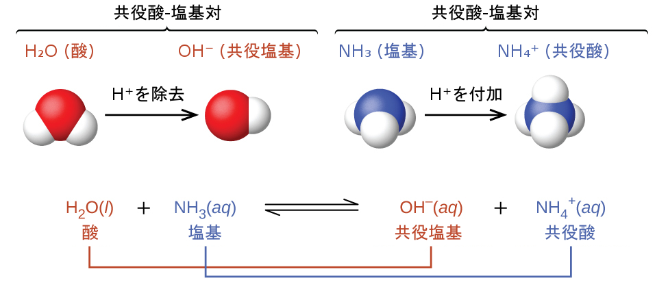
このブレンステッド-ローリー酸と水との反応を酸イオン化といいます。たとえば、フッ化水素が水に溶解してイオン化すると、フッ化水素分子から水分子に陽子が移動し、ヒドロニウムイオンとフッ化物イオンが生成されます:
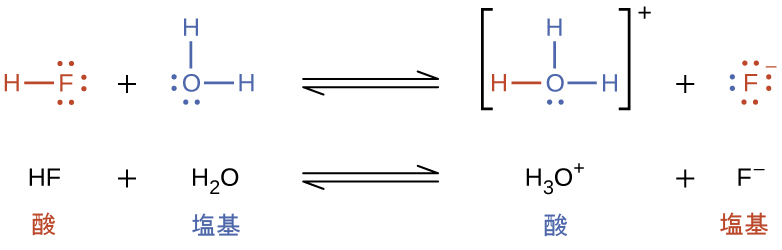
ある種の塩基イオン化は、それが水分子から陽子を受け入れるときに起こります。以下の例では、ピリジン分子C₅NH₅が水に溶解して、水酸化物イオンとピリジニウムイオンが生成されるときに、塩基イオン化を起こします:
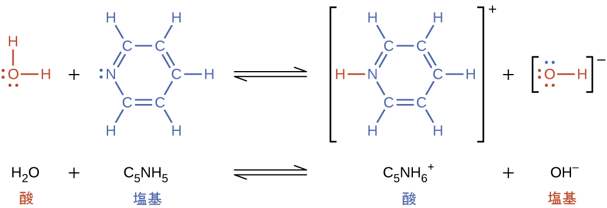
前述のイオン化反応から、水は塩基(フッ化水素との反応のように)と酸(アンモニアとの反応のように)の両方として機能することがあるということが示唆されます。陽子を供与または受容することができる種は両性と呼ばれています。この両性という用語は、ブレンステッド-ローリーの定義以外の定義では、酸と塩基に使用されることがあります。以下の反応式は、2つの両性の種(重炭酸イオンと水)の2つのあり得る酸-塩基反応を示しています:
\[ \rm {HCO_3}^–\ (aq) + H_2 O\ (l) \hspace{20pt} {CO_3}^{2–}\ (aq) + H_3 O^+\ (aq)\\ {HCO_3}^–\ (aq) + H_2 O\ (l) \hspace{20pt} H_2 CO_3\ (aq) + OH^–\ (aq)\\ \]
最初の反応式は酸としての重炭酸イオンと塩基としての水の反応を表しており、2番目の反応式は塩基としての重炭酸イオンと酸としての水の反応を表しています。重炭酸イオンを水に加えると、これらの平衡の両方が同時に確立し、得られる溶液の組成は、本章で後述する適切な平衡計算を通じて決定することができます。
液体状態では、両性物質の分子は、互いに反応することができます。以下の反応式では、水の場合が例示されています:
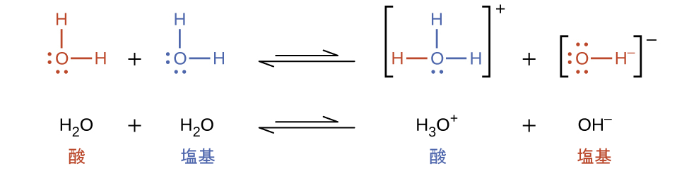
同種の分子が反応してイオンを生成するプロセスは、自動イオン化と呼ばれています。液体の水はごくわずかな程度で自動イオン化を行います。水は、25°Cでは10億個の水分子のうち約2個がイオン化します。水の自動イオン化プロセスの程度は、その平衡定数である水のイオン積定数Kwの値に反映されています:
\[ {\rm H_2 O\ (l) + H_2 O\ (l) ⇌ H_3 O^+\ (aq) + OH^−\ (aq)} \hspace{20pt} K_{\rm w} = {\rm [H_3 O^+][OH^−]} \]
純水のわずかなイオン化は平衡定数の小さな値に反映されています。25°CでのKwの値は、1.0×10⁻¹⁴です。この過程は吸熱的であるため、イオン化の程度や、結果として生じるヒドロニウムイオンと水酸化物イオンの濃度は温度とともに増加します。たとえば、100 °Cでは、Kwの値は約5.6 × 10⁻¹³であり、25 °Cでの値の約50倍の大きさになります。
例題14.1 純水中のイオン濃度
25°Cの純水中のヒドロニウムイオン濃度と水酸化物イオン濃度は何ですか?
解法
水の自動イオン化では、同じ数のヒドロニウムイオンと水酸化物イオンが得られます。したがって、純水では[H₃O⁺] = [OH⁻] = xとなります。25°Cでは:
\[ K_{\rm w} = {\rm [H_3 O^+][OH^−]} = (x)(x) = x^2 = 1.0 × 10^{−14} \]
そのため:
\[ x = {\rm [H_3 O^+] = [OH^−]} = \sqrt{1.0 × 10^{−14}} = 1.0 × 10^{−7}\ M \]
ヒドロニウムイオン濃度と水酸化物イオン濃度は同じ1.0×10⁻⁷Mです。
学習内容の確認
80°Cの水のイオン積は2.4×10⁻¹³です。80°Cの純水中のヒドロニウムイオン濃度と水酸化物イオン濃度は何ですか?
解答:[H₃O⁺] = [OH⁻] = 4.9 × 10⁻⁷M
例題14.2 [H₃O⁺]と[OH⁻]の逆の関係
ある水中の酸の溶液のヒドロニウムイオン濃度は2.0×10⁻⁶Mです。25°Cでの水酸化物イオンの濃度は何ですか?
解法
25°Cでの水のイオン積定数の値
\[ {\rm 2H_2 O\ (l) ⇌ H_3 O^+\ (aq) + OH^−\ (aq)} \hspace{20pt} K_{\rm w} = {\rm [H_3 O^+][OH^−]} = 1.0 × 10^{−14} \]
を用いて、欠落した平衡濃度を計算します。
Kwの式を並べ替えると、[OH⁻]が[H₃O⁺]に反比例することが示されます:
\[ {\rm [OH^−]} =\frac{K_{\rm w}}{[{\rm H_3 O^+}]}=\frac{1.0 × 10^{−14}}{2.0 × 10^{−6}}= 5.0 × 10^{−9} \]
純水と比較すると、酸の溶液は、(酸のイオン化のために)ヒドロニウムイオンの濃度が高く、水酸化物イオンの濃度が比例して低くなります。これは、ル・シャトリエの原理を用いて、ヒドロニウムイオン濃度が上昇したストレスに起因して水の自動イオン化平衡が左側に移動したものとして説明することができます。
イオン濃度をKwの式に代入し、期待される値を得ることができるかによって、この計算を確認します:
\[ K_{\rm w} = {\rm [H_3 O^+ ][OH^− ] = (2.0 × 10^{−6})(5.0 × 10^{−9}) = 1.0 × 10^{−14}} \]
学習内容の確認
25°Cで水酸化物イオン濃度が0.001Mである水溶液中のヒドロニウムイオン濃度は何ですか?
解答:[H₃O⁺] = 1 × 10⁻¹¹M
例題14.3 両性物質の酸-塩基の振る舞いを表す
HSO₃⁻の反応を表す別個の反応式を書いてください。
(a)OH⁻との反応で、酸となるとき
(b)HIとの反応で、塩基となるとき
解法
(a)HSO₃⁻(aq) + OH⁻(aq) ⇌ SO₃²⁻(aq) + H₂O(l)
(b)HSO₃⁻(aq) + HI(aq) ⇌ H₂SO₃(aq) + I⁻(aq)
学習内容の確認
H₂PO₄⁻の反応を表す別個の反応式を書いてください。
(a)HBrとの反応で、塩基となるとき
(b)OH⁻との反応で、酸となるとき
解答:
(a)H₂PO₄⁻(aq) + HBr(aq) ⇌ H₃PO₄(aq) + Br⁻(aq)
(b)H₂PO₄⁻(aq) + OH⁻(aq) ⇌ HPO₄²⁻(aq) + H₂O(l)
14.2 pHとpOH
この節が終わるまでに、あなたは次のことができるようになります:
•酸性、塩基性、または中性の水溶液の特徴を説明する
•ヒドロニウムイオン濃度および水酸化物イオン濃度をpHスケールおよびpOHスケールで表現する
•pHとpOHに関連する計算を行う
前述したように、ヒドロニウムイオンと水酸化物イオンは純水とすべての水溶液の両方の中に存在し、それらの濃度は水のイオン積(Kw)によって決定されるように反比例します。溶液中のこれらのイオンの濃度は、しばしば溶液の性質や他の溶質の化学的な振る舞いを決定する重要な要素であり、これらの濃度を相対的な用語で記述するための特別な語彙が開発されてきました。ある溶液は、ヒドロニウムイオンと水酸化物イオンの濃度が等しい場合は中性、水酸化物イオンよりもヒドロニウムイオンの濃度が高い場合は酸性、水酸化物イオンよりもヒドロニウムイオンの濃度が低い場合は塩基性となります。
何桁にも及ぶ量を表現する一般的な手段は、対数スケールを使用することです。そのようなスケールのうちで、化学的な濃度や平衡定数のために非常によく使われるものの1つは、ここに示されるように定義されたp-関数に基づいています。ここで、「X」は関心のある量、「log」は底が10の対数です:
\[ \rm pX = −\log X \]
したがって、溶液のpHは、ここに示すように定義されます。ここで、[H₃O⁺]は溶液中のヒドロニウムイオンのモル濃度です:
\[ \rm pH = −\log[H_3 O^+ ] \]
この式を並べ替えて、ヒドロニウムイオンのモル濃度を分離すると、等価な式が得られます:
\[ \rm [H_3 O^+ ] = 10^{−pH} \]
同様に、水酸化物イオンのモル濃度もp-関数、すなわちpOHで表すことができます:
\[ \rm pOH = −\log[OH^−]\ または\ [OH^−] = 10^{−pOH} \]
最後に、p-関数で表されるこれら2つのイオン濃度の間の関係は、Kwの式から簡単に導き出すことができます:
\[ K_{\rm w} = {\rm [H_3 O^+ ][OH^− ]}\\ −\log K_{\rm w} = −\log ({\rm [H_3 O^+ ][OH^− ]}) = −\log {\rm [H_3 O^+ ]} + (−\log {\rm [OH^− ]})\\ {\rm p}K_{\rm w} = {\rm pH + pOH}\\ \]
25°Cでは、Kwの値は、1.0×10⁻¹⁴であるので:
\[ 14.00 = {\rm pH + pOH} \]
例題14.1で示されたように、純水(または任意の中性溶液)中のヒドロニウムイオンのモル濃度は、25°Cで1.0×10⁻⁷Mです。したがって、この温度での中性溶液のpHとpOHは、以下のようになります:
\[ \rm pH = −\log[H_3 O^+ ] = −\log(1.0 × 10^{−7} ) = 7.00\\ \rm pOH = −\log[OH^− ] = −\log(1.0 × 10^{−7} ) = 7.00\\ \]
したがって、この温度では、酸性溶液とは、1.0×10⁻⁷Mより大きいヒドロニウムイオンのモル濃度と1.0×10⁻⁷Mより小さい水酸化物イオンのモル濃度(pH値が7.00未満、pOH値が7.00超に対応)を有する溶液のことです。塩基性溶液とは、1.0×10⁻⁷Mより小さいヒドロニウムイオンのモル濃度と1.0×10⁻⁷Mより大きい水酸化物イオンのモル濃度(pH値が7.00超、pOH値が7.00未満に対応)を有する溶液のことです。
自動イオン化定数Kwは温度に依存するので、pH値と酸性/中性/塩基性という形容詞との間のこれらの関係性は、25 °C以外の温度では異なったものになります。たとえば、例題14.1に付随する「学習内容の確認」の演習では、80°Cでの純水のヒドロニウムモル濃度は4.9×10⁻⁷Mであることが示されており、これは以下のpH値とpOH値に対応しています:
\[ \rm pH = −\log[H_3 O^+ ] = −\log(4.9 × 10^{−7}) = 6.31\\ \rm pOH = −\log[OH^− ] = −\log(4.9 × 10^{−7}) = 6.31\\ \]
したがって、この温度では、中性溶液はpH = pOH = 6.31を示し、酸性溶液はpHが6.31未満でpOHが6.31超であるのに対し、塩基性溶液はpHが6.31超でpOHが6.31未満です。この区別は、他の温度で起こる特定のプロセス、たとえば36～40°C前後の温度での温血生物の酵素反応などを研究する際に重要になります。別段の記載がない限り、pH値への言及は25°Cでの値であるとみなされます(表14.1)。
表14.1
図14.2は、酸性、塩基性、中性に分類されたさまざまな溶液についての[H₃O⁺]、[OH⁻]、pH、およびpOHの関係性を示しています。
図14.2 | pHとpOHの目盛りはそれぞれH₃O⁺とOH⁻の濃度を表しています。25°Cでのいくつかの一般的な物質のpHとpOHの値が、この表に示されています。
例題14.4 [H₃O⁺]からのpHの計算
胃酸(ヒドロニウムイオン濃度が1.2×10⁻³MであるHCl溶液)のpHは何ですか?
解法
\[ \begin{eqnarray} \rm pH &=& −\log[\rm H_3 O^+ ]\\ &=& −\log(1.2 × 10^{−3})\\ &=& −(−2.92) = 2.92\\ \end{eqnarray} \]
(対数の使い方は付録Bで説明されています。ある値の対数を取るときには、その値の中にある有効数字と同じだけの小数点以下の桁数を結果の中に入れてください。)
学習内容の確認
空気に触れた水には、二酸化炭素と水が反応したことによる炭酸(H₂CO₃)が含まれています:
\[ \rm CO_2\ (aq) + H_2 O\ (l) ⇌ H_2 CO_3\ (aq)\\ \]
空気で飽和された水は、溶解したCO₂によるヒドロニウムイオン濃度が2.0×10⁻⁶Mであり、これは純水の濃度の約20倍の大きさです。25°Cでのこの溶液のpHを計算してください。
解答:5.70
例題14.5 pHからのヒドロニウムイオン濃度の計算
pHが7.3である血液のヒドロニウムイオン濃度を計算してください。
解法
\[ {\rm pH = −\log[H_3 O^+ ] = 7.3}\\ {\rm log[H_3 O^+ ] = −7.3}\\ {\rm [H_3 O^+ ] = 10^{−7.3}\ または\ [H_3 O^+ ] = log^{-1}(−7.3)}\\ {\rm [H_3 O^+ ] = 5 × 10^{−8}}\ M\\ \]
(電卓で-7.3の対数の逆を取るか、10-7.3を計算してください。)
学習内容の確認
pHが-1.07の溶液のヒドロニウムイオン濃度を計算してください。
解答:12 M
さまざまな科学のつながり
環境科学
通常の雨水のpHは、溶解したCO₂の存在により炭酸が生成されるため、5～6の間にあります:
\[ \rm H_2 O\ (l) + CO_2\ (g) ⟶ H_2 CO_3\ (aq)\\ H_2 CO_3\ (aq) ⇌ H^+\ (aq) + {HCO_3}^−\ (aq)\\ \]
酸性雨とは、CO₂、SO₂、SO₃、NO、NO₂などのさまざまな非金属酸化物が水中に溶解し、反応して炭酸、硫酸や硝酸を生成するために、pHが5未満となった雨水のことをいいます。硫酸の生成とその後のイオン化がここに示されています:
\[ \rm H_2 O\ (l) + SO_3\ (g) ⟶ H_2 SO_4\ (aq)\\ H_2 SO_4\ (aq) ⟶ H^+\ (aq) + {HSO_4}^−\ (aq)\\ \]
二酸化炭素は、ほとんどの生物が代謝の廃棄生成物としてそれを生成するため、大気中に自然に存在しています。二酸化炭素は、炎によって植生や化石燃料の中に蓄えられた炭素が放出されるときにも生成されます。大気中の三酸化硫黄は、火山活動によって自然に生成されますが、それはまた、微量の硫黄を持つ化石燃料の燃焼や、金属精錬プロセスで金属硫化物の鉱石を「焙焼する」過程からも生じます。窒素酸化物は、高温で空気中の窒素と酸素が化学的に結合することが可能である内燃機関で生成されます。
酸性雨は、硫黄酸化物や窒素酸化物が除去されることなく燃焼や製錬の生成物が大気中に放出されるような工業地帯で特に問題となっています。北米やヨーロッパでは1980年代まで、酸性雨は森林や淡水湖の破壊の原因となっており、雨の酸性度によって実際に樹木が枯れ、土壌が傷つき、最も酸性に耐性のある種を除いて湖では生息不可能になりました。また、酸性雨は大理石や石灰岩でできた彫像や建物のファサードを腐食させます(図14.3)。工業や自動車から大気中に放出される硫黄酸化物や窒素酸化物の量を制限する規制により、北米やヨーロッパの自然環境や人工環境への酸の被害の深刻さは軽減されてきました。現在では、中国やインドの工業地帯で問題が拡大しています。
酸性雨についてのさらに詳しい情報は、米国環境保護庁が開設するウェブサイト(http://openstaxcollege.org/l/16EPA)を訪れてください。
図14.3 | (a)酸性雨によって、樹木は干ばつや害虫の被害を受けやすくなり、土壌中の栄養分が枯渇します。(b)それはまた、大理石や石灰岩で彫られた彫像を腐食させます。(credit a: modification of work by Chris M Morris; credit b: modification of work by “Eden, Janine and Jim”/Flickr)
例題14.6 pOHの計算
水酸化カリウム(KOH)の0.0125M溶液のpOHとpHは何ですか?
解法
水酸化カリウムは非常に溶解性の高いイオン化合物であり、希薄溶液へと溶解するときには完全に解離し、[OH⁻] = 0.0125 Mが得られます:
\[ {\rm pOH = −\log[OH^− ] = −\log0.0125= −(−1.903) = 1.903} \]
pHはpOHから求めることができます:
\[ {\rm pH + pOH = 14.00}\\ {\rm pH = 14.00 − pOH = 14.00 − 1.903 = 12.10}\\ \]
学習内容の確認
酢のヒドロニウムイオン濃度は約4×10⁻³Mです。pOHとpHの対応する値は何ですか?
解答:pOH = 11.6, pH = 2.4
ある溶液の酸性度は、通常、そのpHの測定によって実験的に評価されます。溶液のpOHは、実験的に決定されたpHの値から容易に計算できるため、通常は測定されません。溶液のpHはpH計を用いて直接測定することができます(図14.4)。
図14.4 | (a)研究室で使用される研究用pH計の分解能は0.001 pH単位、正確度は±0.002 pH単位で、価格は1000ドルを超えることがあります。(b)持ち運び可能なpH計は、分解能が低く(0.01 pH単位)、正確度が低く(±0.2 pH単位)、価格がはるかに安いです。(credit b: modification of work by Jacopo Werther)
溶液のpHは、着色された指示薬を使用して視覚的に推定することもできます(図14.5)。pH測定のためにこれらの指示薬の色素を使用することを可能にする酸-塩基平衡については、本章の後の節で説明します。
図14.5 | (a)万能指示薬と呼ばれる色素混合物を含む溶液は、そのpHに応じて異なる色を示します。(b)pH紙と呼ばれる便利な試験紙片には、水溶液と接触した際にpHに基づく色の変化をもたらす指示薬の色素が埋め込まれています。(credit: modification of work by Sahar Atwa)
14.3 酸と塩基の相対的な強さ
この節が終わるまでに、あなたは次のことができるようになります:
•イオン化定数に応じて、酸と塩基の相対的な強さを評価する
•酸-塩基強度の傾向を分子構造との関係で理屈づける
•弱酸-塩基系の平衡計算を行う
酸と塩基のイオン化定数
酸または塩基の相対的な強さとは、水に溶解したときにそれらがどの程度イオン化するかということです。もしイオン化反応が実質的に完全であれば、その酸または塩基は強酸・強塩基と呼ばれます。もし比較的少ないイオン化が起こる場合は、その酸または塩基は弱酸・弱塩基となります。この章の残りの部分で明らかになるように、強い酸や塩基よりも弱い酸や塩基の方が多く存在します。最も一般的な強酸と強塩基が図14.6に示されています。
図14.6 | 一般的な強酸と強塩基の一部がここに示されています。
酸の相対的な強さは、水溶液中の平衡定数を測定することによって定量化することができます。同じ濃度の溶液では、強い酸ほど大きな程度でイオン化し、弱い酸よりも高い濃度のヒドロニウムイオンを生成します。酸の平衡定数を酸イオン化定数Kaといいます。ある酸HAの反応:
\[ {\rm HA\ (aq) + H_2 O\ (l) ⇌ H_3 O^+\ (aq) + A^−\ (aq)} \]
では、酸イオン化定数は次のように書かれます。
\[ K_{\rm a} =\frac{\rm [H_3 O^+ ][A^− ]}{\rm [HA]} \]
ここで、濃度は平衡時の濃度です。水はこの反応の反応物ですが、溶媒でもありますので、私たちは反応式には[H₂O]を含めません。酸のKaが大きいほど、平衡混合物中でイオン化していない酸HAの濃度に対するH₃O⁺とA⁻の濃度が大きくなり、強い酸になります。酸は完全にイオン化するときに「強い」と分類されますが、この場合、HAの濃度はゼロであり、酸イオン化定数は測定できないほど大きくなります(Ka≈∞)。部分的にイオン化された酸は「弱い」と呼ばれ、その酸イオン化定数を実験的に測定することができます。弱酸のイオン化定数の表は付録Hで与えられています。
この考え方を説明するために、3つの酸イオン化についての反応式とKaの値を以下に示します。イオン化定数は、ここに挙げた反応式の最初のものから最後のものへと増加しており、CH₃CO₂H < HNO₂ < HSO₄⁻の順序で相対的な酸の強さが増加することを示しています:
\[ {\rm CH_3 CO_2 H\ (aq) + H_2 O\ (l) ⇌ H_3 O^+\ (aq) + {CH_3 CO_2}^−\ (aq)} \hspace{20pt} K_{\rm a} = 1.8 × 10^{−5}\\ {\rm HNO_2\ (aq) + H_2 O\ (l) ⇌ H_3 O^+\ (aq) + {NO_2}^−\ (aq)} \hspace{20pt} K_{\rm a} = 4.6 × 10^{−4}\\ {\rm {HSO_4}^−\ (aq) + H_2 O\ (aq) ⇌ H_3 O^+\ (aq) + {SO_4}^{2−}\ (aq)} \hspace{20pt} K_{\rm a} = 1.2 × 10^{−2}\\ \]
酸の強さのもう1つの尺度は、イオン化率です。弱酸のイオン化率は、平衡混合物の組成という観点から定義されます:
\[ イオン化率 =\frac{\rm [H_3 O^+ ]_{eq}}{\rm [HA]_0}× 100 \]
ここで分子は酸の共役塩基の濃度に相当します(化学量論では、[A⁻] = [H₃O⁺])。Kaの値とは異なり、弱酸のイオン化率は酸の初期濃度によって変化し、典型的には濃度が高くなるにつれて減少します。この章で後述するような平衡計算を使って、この振る舞いを確認することができます。
例題14.7 pHからのイオン化率の計算
亜硝酸(弱酸)の0.125M溶液のpHが2.09の場合のイオン化率を計算してください。
解法
酸のイオン化率は:
\[ \frac{\rm [H_3 O^+ ]_{eq}}{\rm [HNO_2 ]_0}× 100 \]
与えられたpHをヒドロニウムイオンのモル濃度に変換すると、以下のようになります。
\[ {\rm [H_3 O^+ ]} = 10^{−2.09} = 0.0081\ M \]
この値と与えられた初期の酸の濃度をイオン化率の式に代入すると、以下のようになります。
\[ \frac{8.1 × 10^{−3}}{0.125}× 100 = 6.5％ \]
(与えられたpH値2.09は対数であることに注意してください。そのため、それは2つの有効数字しか含んでおらず、計算されたイオン化率の確かさを制限しています。)
学習内容の確認
酢酸の0.10M溶液のpHが2.89の場合のイオン化率を計算してください。
解答:1.3%がイオン化しています
学習へのリンク
強酸・強塩基と弱酸・弱塩基の分子レベルでのシミュレーション(http://openstaxcollege.org/l/16AcidBase)を見てください。
酸と同様に、塩基の相対的な強さは、水溶液中での塩基イオン化定数(Kb)の大きさに反映されます。同じ濃度の溶液では、強い塩基ほど大きな程度でイオン化し、弱い塩基よりも高い濃度の水酸化物イオンを生成します。強い塩基は弱い塩基よりもイオン化定数が大きくなります。ある塩基Bの反応:
\[ {\rm B\ (aq) + H_2 O\ (l) ⇌ HB^+\ (aq) + OH^−\ (aq)} \]
では、イオン化定数は、以下のように書かれます。
\[ K_{\rm b} =\frac{\rm [HB^+ ][OH^− ]}{\rm [B]} \]
以下に示される3つの弱塩基のデータを確認すると、NO₂⁻ < CH₃CO₂⁻ < NH₃の順序で塩基の強度が増加していることがわかります。
\[ {\rm {NO_2}^−\ (aq) + H_2 O\ (l) ⇌ HNO_2\ (aq) + OH^−\ (aq)} \hspace{20pt} K_{\rm b} = 2.17 × 10^{−11}\\ {\rm {CH_3 CO_2}^−\ (aq) + H_2 O\ (l) ⇌ CH_3 CO_2 H\ (aq) + OH^−\ (aq)} \hspace{20pt} K_{\rm b} = 5.6 × 10^{−10}\\ {\rm NH_3\ (aq) + H_2 O\ (l) ⇌ {NH_4}^+\ (aq) + OH^−\ (aq)} \hspace{20pt} K_{\rm b} = 1.8 × 10^{−5}\\ \]
弱塩基のイオン化定数の表は付録Iに記載されています。酸についてと同じように、塩基の相対的な強さも、以下のように計算されたイオン化率に反映されます。
\[ イオン化率 = \frac{\rm [OH^− ]_{eq}}{\rm [B]_0} ×100 \]
しかし、これは塩基イオン化定数と溶液の初期濃度によって変化します。
共役酸-塩基対の相対強度
ブレンステッド-ローリーの酸-塩基化学は陽子の移動であるため、論理によって共役酸-塩基対の相対的な強さの関係が示されます。酸や塩基の強さは、酸や塩基のイオン化反応の程度を表すイオン化定数KaまたはKbで定量化されます。共役酸-塩基対HA / A⁻については、イオン化平衡の反応式とイオン化定数の式は以下のようになります。
\[ {\rm HA\ (aq) + H_2 O\ (l) ⇌ H_3 O^+\ (aq) + A^−\ (aq)} \hspace{20pt} K_{\rm a} =\frac{\rm [H_3 O^+ ][A^− ]}{\rm [HA]}\\ {\rm A^−\ (aq) + H_2 O\ (l) ⇌ OH^−\ (aq) + HA\ (aq)} \hspace{20pt} K_{\rm b} =\frac{\rm [HA][OH^− ]}{\rm [A^− ]}\\ \]
これらの2つの化学反応式を足し合わせると、水の自動イオン化の反応式が得られます:
\[ \rm HA\ (aq) + H_2 O\ (l) + A^−\ (aq) + H_2 O\ (l) ⇌ H_3 O^+\ (aq) + A^−\ (aq) + OH^−\ (aq) + HA\ (aq)\\ 2H_2 O\ (l) ⇌ H_3 O^+\ (aq) + OH^−\ (aq)\\ \]
平衡についての別の章で議論したように、足し合わせた反応の平衡定数は、足し合わせる反応の平衡定数の数学的積に等しいので、以下のようになります。
\[ K_{\rm a} × K_{\rm b} =\frac{\rm [H_3 O^+ ][A^− ]}{\rm [HA]}×\frac{\rm [HA][OH^− ]}{\rm [A^− ]}= {\rm [H_3 O^+ ][OH^− ]} = K_{\rm w} \]
この式は、任意の共役酸-塩基対のイオン化定数の間の関係、すなわち、それらの数学的積が水のイオン積Kwに等しいことを述べています。この式を並べ替えると、共役酸-塩基対の強さの逆数関係が明らかになります:
\[ K_{\rm a} = K_{\rm w} /K_{\rm b}\ または\ K_{\rm b} = K_{\rm w} /K_{\rm a}\\ \]
KaとKbの間の反比例関係は、酸または塩基が強いほど、その共役パートナーが弱いことを意味します。図14.7は、いくつかの共役酸-塩基対についてのこの関係を示しています。
図14.7 | いくつかの共役酸-塩基対の相対的な強さが示されています。
図14.8 | この図は、基準物質としての水の強さに対する共役酸-塩基対の相対的な強さを示しています。
図14.8に示されている共役酸-塩基対のリストは、水と比較した場合のそれぞれの種の相対的な強さを示すように配置されてます。水の項目は表のそれぞれの列で強調されています。酸の列において、水の下に列挙されている種は水よりも弱い酸です。これらの種は水中で酸イオン化を行いません。それらは、ブレンステッド-ローリー酸ではありません。水の上に列挙されているすべての種はより強い酸であり、水溶液の中に溶解するときにはある程度水に陽子を移動させてヒドロニウムイオンを生成します。水の上にあるものの、ヒドロニウムイオンより下にある種は、部分的な酸イオン化を行う弱酸であり、ヒドロニウムイオンよりも上にある種は、水溶液中で完全にイオン化される強酸です。
これらのすべての強酸が完全に水の中でイオン化されるのならば、なぜこの列は、それらの強さが異なること(硝酸が最も弱く、過塩素酸が最も強いこと)を示しているのでしょうか?任意の強酸の水溶液中に存在する唯一の酸の種は、H₃O⁺(aq)であることに注意してください。これは、ヒドロニウムイオンが、水の中に存在することのできる最も強い酸であることを意味しています。任意の強い酸は水と完全に反応して、ヒドロニウムイオンを生成します。溶液中の溶質の酸の強さに関するこの制限は、水平化効果と呼ばれています。「強い」酸についての酸の強度の違いを測定するには、水よりも塩基性の低い溶媒に酸を溶解しなければなりません。そのような溶媒の中では、酸は「弱く」なるので、酸のイオン化の程度の違いを決定することができます。たとえば、二元水素ハロゲン化物HCl、HBr、HIは水の中では強酸ですが、エタノールの中では弱酸です(強さはHCl < HBr < HIの順に増します)。
図14.8の右側の列は、上から下へと塩基の強さが増す順にいくつかの物質を列挙しています。左側の列と同じ理屈に従って、水よりも上に列挙されている種は弱い塩基なので、それらは水に溶解したときでも塩基イオン化を行いません。水とその共役塩基である水酸化物イオンの間に列挙されている種は、部分的にイオン化する弱塩基です。水酸化物イオンの下に列挙されている種は、水中で完全にイオン化して水酸化物イオンを得る強塩基です(すなわち、それらは水酸化物と水平化します)。この表の酸および塩基の列を比較すると、共役酸-塩基対の強さの間の逆数の関係の裏付けが得られます。たとえば、強酸の共役塩基(表の上の部分)はすべて無視できるほどの強さです。強酸は計測できないほど大きなKaを示すので、その共役塩基は実質的にゼロのKbを示すことになります:
\[ 強酸 : K_{\rm a} ≈ ∞\\ 共役塩基 : K_{\rm b} = K_{\rm w} /K_{\rm a} = K_{\rm w} /∞ ≈ 0\\ \]
同様のアプローチを使って、強塩基(Kb≈∞)の共役酸は無視できる強さ(Ka≈0)であるという観察を裏付けることができます。
例題14.8 共役酸-塩基対のイオン化定数の計算
亜硝酸イオンNO₂⁻のKbを用いて、その共役酸のKaを計算してください。
解法
NO₂⁻のKbは、この節では 2.17 × 10⁻¹¹として与えられています。NO₂⁻の共役酸はHNO₂です。HNO₂のKaは以下の関係を用いて計算することができます:
\[ K_{\rm a} × K_{\rm b} = 1.0 × 10^{−14} = K_{\rm w}\\ \]
Kaについて解くと以下が得られます。
\[ K_{\rm a} =\frac{K_{\rm w}}{K_{\rm b}}=\frac{1.0 × 10^{−14}}{2.17 × 10^{−11}}= 4.6 × 10^{−4}\\ \]
この答えは、付録HでHNO₂のKaを見つけることによって確認することができます。
学習内容の確認
NH₄⁺とHCNのイオン化定数を比較することにより、それらの相対的な酸の強さを決定してください。HCNのイオン化定数は付録Hで4.9 × 10⁻¹⁰として与えられています。NH₄⁺のイオン化定数は記載されていませんが、その共役塩基NH₃のイオン化定数は 1.8 × 10⁻⁵と記載されています。
解答:NH₄⁺の方がやや強い酸です (NH₄⁺のKa = 5.6 × 10⁻¹⁰)。
酸-塩基平衡計算
化学平衡に関する章では、いくつかの種類の平衡計算と、それを実行するのに役立つさまざまな数学的戦略を紹介しました。これらの戦略は、化学反応の分類に関係なく、平衡系にとって一般的に有用であるため、それらは酸-塩基平衡問題にも効果的に適用することができます。この項では、酸-塩基系についての平衡計算を含む例題をいくつか紹介します。
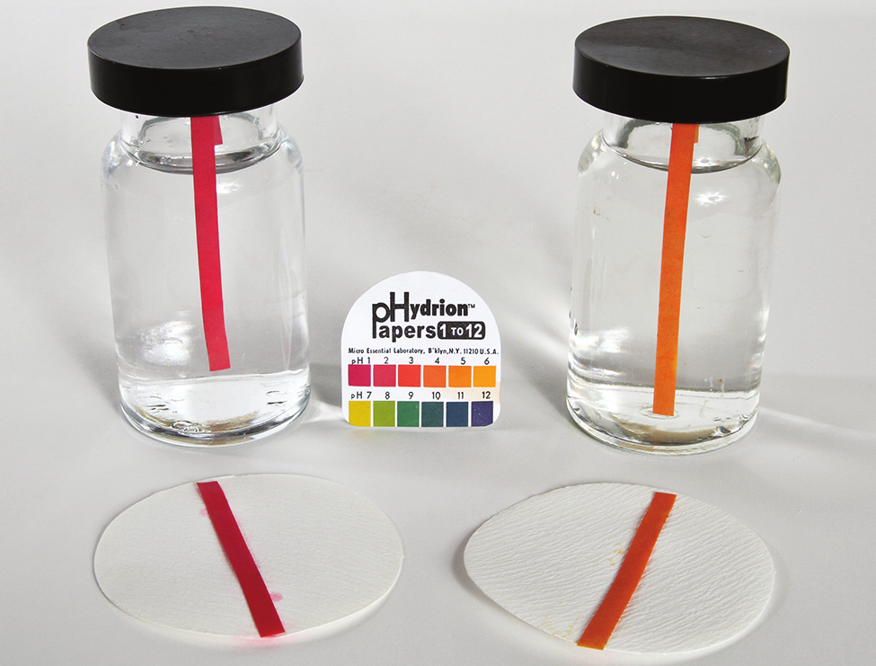
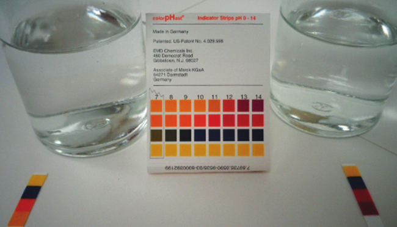
例題14.9 平衡濃度からのKaの決定
酢酸は酢の主成分であり(図14.9)、酸味を与えます。平衡において、溶液には[CH₃CO₂H] = 0.0787 M、[H₃O⁺] = [CH₃CO₂⁻] = 0.00118 Mが含まれています。酢酸のKaの値は何ですか?
図14.9 | 酢には弱酸である酢酸が含まれています。(credit: modification of work by “HomeSpot HQ”/Flickr)
解法
関連する平衡の反応式と、その平衡定数の式が以下に示されています。与えられた平衡濃度を代入することによって、酢酸のKaを簡単に計算することができます。
\[ {\rm CH_3 CO_2 H\ (aq) + H_2 O\ (l) ⇌ H_3 O^+\ (aq) + {CH_3 CO_2}^−\ (aq)}\\ K_{\rm a} =\frac{\rm [H_3 O^+ ][{CH_3 CO_2}^− ]}{\rm [CH_3 CO_2 H]}=\frac{(0.00118)(0.00118)}{0.0787}= 1.77 × 10^{−5}\\ \]
学習内容の確認
HSO₄⁻イオンは、一部の家庭用洗剤に使用されている弱酸です:
\[ {\rm {HSO_4}^−\ (aq) + H_2 O\ (l) ⇌ H_3 O^+\ (aq) + {SO_4}^{2−}\ (aq)} \]
平衡混合物が以下の組成を有している場合、この弱酸の酸イオン化定数は何ですか?:[H₃O⁺] = 0.027 M、[HSO₄⁻] = 0.29 M、および[SO₄²⁻] = 0.13 M。
解答:HSO₄⁻について、Ka = 1.2 × 10⁻²
例題14.10 平衡濃度からのKbの決定
カフェイン(C₈H₁₀N₄O₂)は弱塩基です。平衡において、溶液が[C₈H₁₀N₄O₂] = 0.050 M、[C₈H₁₀N₄O₂H⁺] = 5.0 × 10⁻³M、[OH⁻] = 2.5 × 10⁻³Mを有する場合、カフェインのKbの値は何ですか?
解法
関連する平衡の反応式と、その平衡定数の式が以下に示されています。与えられた平衡濃度を代入することによって、カフェインのKbを簡単に計算することができます。
\[ {\rm C_8 H_{10} N_4 O_2\ (aq) + H_2 O\ (l) ⇌ C_8 H_{10} N_4 O_2 H^+\ (aq) + OH^−\ (aq)}\\ K_{\rm b} =\frac{\rm [C_8 H_{10} N_4 O_2 H^+ ][OH^− ]}{\rm [C_8 H_{10} N_4 O_2 ]}=\frac{(5.0 × 10^{−3})(2.5 × 10^{−3})}{0.050}= 2.5 × 10^{−4}\\ \]
学習内容の確認
HPO₄²⁻イオンは、弱塩基です。
\[ {\rm {HPO_4}^{2−}\ (aq) + H_2 O\ (l) ⇌ {H_2 PO_4}^−\ (aq) + OH^−\ (aq)} \]
平衡混合物が以下の組成を有している場合、HPO₄²⁻イオンのイオン化についての平衡定数は何ですか?: [OH⁻] = 1.3 × 10⁻⁶M、[H₂PO₄⁻] = 0.042 M、および[HPO₄²⁻] = 0.341 M。
解答:HPO₄²⁻について、Kb = 1.6 × 10⁻⁷
例題14.11 pHからのKaまたはKbの決定
亜硝酸HNO₂の0.0516M溶液のpHは、2.34です。そのKaは何ですか?
\[ {\rm HNO_2\ (aq) + H_2 O\ (l) ⇌ H_3 O^+\ (aq) + {NO_2}^−\ (aq)} \]
解法
与えられた亜硝酸濃度は形式的な濃度であり、溶液中で確立することのある化学平衡を考慮に入れたものではありません。このような濃度は、ICE表のアプローチを使用して平衡を計算するための「初期」値として扱われます。水の自動分解によって小さな濃度(1 × 10⁻⁷M)のH₃O⁺が存在するため、ヒドロニウムイオンの初期値は、ほぼゼロとして記載されていることに注意してください。この章で紹介したもののように、多くの場合では、この濃度は、問題となっている酸(または塩基)のイオン化によって生成されたものよりもはるかに小さいため、無視することができます。
与えられたpHは、亜硝酸の酸イオン化から生じるヒドロニウムイオン濃度の対数尺度であり、したがって、それはICE表の「平衡」値を表しています:
\[ {\rm [H_3 O^+ ]} = 10^{−2.34} = 0.0046\ M \]
この系のICE表は
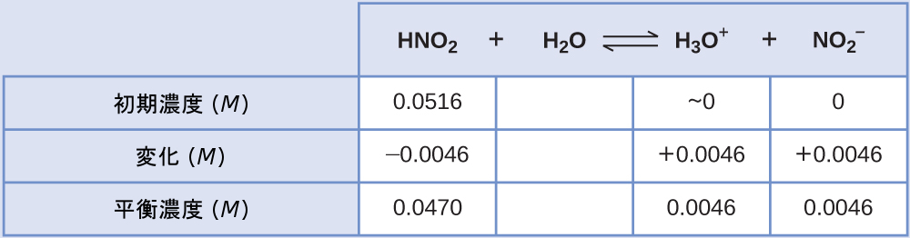
最後に、表のデータを使って平衡定数の値を計算します:
\[ K_{\rm a} =\frac{\rm [H_3 O^+ ][{NO_2}^− ]}{\rm [HNO_2 ]}=\frac{(0.0046)(0.0046)}{(0.0470)}= 4.6 × 10^{−4}\\ \]
学習内容の確認
家庭用アンモニア(NH₃の 0.950M溶液)の pH は、11.612 です。NH₃の Kbは何ですか?
解答:Kb = 1.8 × 10⁻⁵
例題14.12 弱酸溶液の平衡濃度を計算する
ギ酸(HCO₂H)は、一部のアリに噛まれたり、刺されたりしたときに体の反応を引き起こす刺激物の1つです(図14.10)。
図14.10 | 一部のアリに噛まれたり、刺されたりしたときの痛みはギ酸によって引き起こされます。(credit: John Tann)
ギ酸の0.534M溶液のヒドロニウムイオン濃度とpHは何ですか?
\[ {\rm HCO_2 H\ (aq) + H_2 O\ (l) ⇌ H_3 O^+\ (aq) + {HCO_2}^−\ (aq)} \hspace{20pt} K_{\rm a} = 1.8 × 10^{−4}\\ \]
解法
この系のICE表は
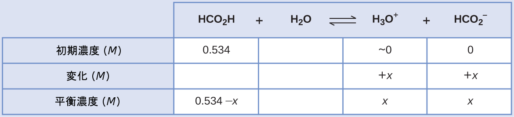
平衡濃度の項をKaの式に代入すると、以下のようになります。
\[ K_{\rm a} = 1.8 × 10^{−4} =\frac{\rm [H_3 O^+ ][{HCO_2}^− ]}{\rm [HCO_2 H]}\\ \frac{(x)(x)}{0.534 − x}= 1.8 × 10^{−4}\\ \]
初期濃度が比較的大きく、平衡定数が小さいため、xが0.534よりもはるかに小さいという単純化の仮定が可能になります。したがって、式は以下のようになります。
\[ K_{\rm a} = 1.8 × 10^{−4} =\frac{x^2}{0.534} \]
この式をxについて解くと、以下が得られます。
\[ x^2 = 0.534 × (1.8 × 10^{−4}) = 9.6 × 10^{−5}\\ x = \sqrt{9.6 × 10^{−5}}= 9.8 × 10^{−3}\ M\\ \]
0.534に比べてxが小さいという仮定を確認するために、その相対的な大きさを推定することができます:
\[ \frac{x}{0.534}=\frac{9.8 × 10^{−3}}{0.534}= 1.8 × 10^{−2}\ (0.534\ の\ 1.8％) \]
xは初期濃度の5%未満であるため、この仮定は妥当です。
ICE表で定義されているように、xはヒドロニウムイオンの平衡濃度に等しいです:
\[ x = {\rm [H_3 O^+ ]} = 0.0098\ M \]
最後に、pHを計算すると
\[ \rm pH = −\log[H_3 O^+ ] = −\log(0.0098) = 2.01\\ \]
学習内容の確認
弱酸のごく一部だけが水溶液中でイオン化します。酢酸(CH₃CO₂H)の0.100M溶液のイオン化率は何ですか?
\[ {\rm CH_3 CO_2 H\ (aq) + H_2 O\ (l) ⇌ H_3 O^+\ (aq) + {CH_3 CO_2}^−\ (aq)} \hspace{20pt} K_{\rm a} = 1.8 × 10^{−5}\\ \]
解答:イオン化率 = 1.3%
例題14.13 弱塩基溶液の平衡濃度を計算する
弱塩基のトリメチルアミンの 0.25M溶液の水酸化物イオン濃度、pOH、pH を求めてください:
\[ {\rm (CH_3)_3 N\ (aq) + H_2 O\ (l) ⇌ (CH_3)_3 NH^+\ (aq) + OH^−\ (aq)} \hspace{20pt} K_{\rm b} = 6.3 × 10^{−5} \]
解法
この系のICE表は
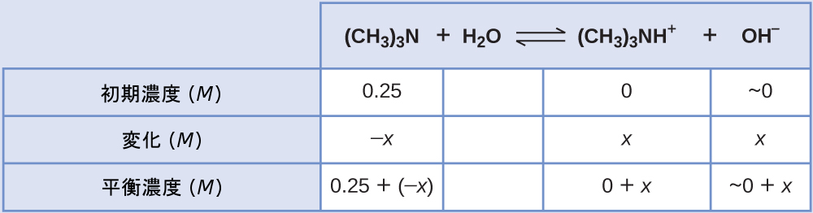
平衡濃度の項をKbの式に代入すると、以下のようになります。
\[ K_{\rm b} =\frac{\rm [(CH_3 )_3 NH^+ ][OH^− ]}{\rm [(CH_3 )_3 N]}=\frac{(x)(x)}{0.25 − x}= 6.3 × 10^{−5} \]
x << 0.25 と仮定してxについて解くと、以下のようになります。
\[ x = 4.0 × 10^{−3}\ M \]
この値は初期濃度(0.25)の5%未満であるので、その仮定は正当なものです。ICE表で定義されているように、xは水酸化物イオンの平衡濃度に等しいです:
\[ {\rm [OH^− ]} =\ \sim0 + x = x = 4.0 × 10^{−3}\ M\\ = 4.0 × 10^{−3}\ M\\ \]
pOHを計算すると
\[ {\rm pOH = −\log(4.0 × 10^{−3}) = 2.40} \]
この章の以前の節で導入した関係:
\[ {\rm pH + pOH = p}K_{\rm w} = 14.00 \]
を使用して、pHを計算することができます:
\[ {\rm pH = 14.00 − pOH = 14.00 − 2.40 = 11.60} \]
学習内容の確認
Kbが 1.76 × 10⁻⁵である弱塩基のアンモニアの 0.0325M溶液の水酸化物イオン濃度とイオン化率を計算してください。
解答:7.56 × 10⁻⁴M、2.33%
いくつかのケースでは、弱酸や弱塩基の強さとその形式的な(初期)濃度によって、かなりのイオン化が起こります。ICEを用いる戦略はこれらの系に対しても有効なままですが、xが無視できるほど小さいという単純化の仮定ができないため、代数的な計算は少し複雑になります。この種類の計算が、下記の例題14.14で提示されています。
例題14.14 単純化の仮定を用いずに平衡濃度を計算する
重硫酸ナトリウム(NaHSO₄)は、HSO₄⁻イオン(弱酸)の供給源としていくつかの家庭用洗剤で使用されています。HSO₄⁻の0.50M溶液のpHは何ですか?
\[ {\rm {HSO_4}^−\ (aq) + H_2 O\ (l) ⇌ H_3 O^+\ (aq) + {SO_4}^{2−}\ (aq)} \hspace{20pt} K_{\rm a} = 1.2 × 10^{−2} \]
解法
この系のICE表は
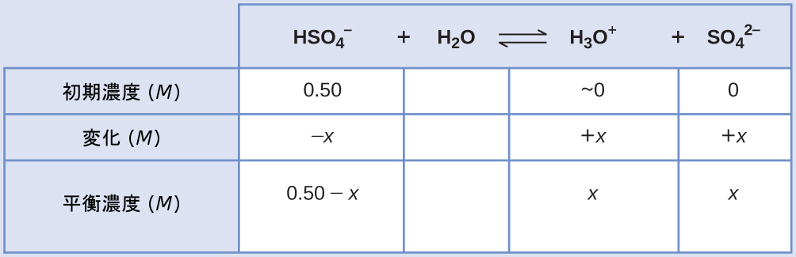
平衡濃度の項をKaの式に代入すると、以下のようになります。
\[ K_{\rm a} = 1.2 × 10^{−2} =\frac{\rm [H_3 O^+ ][{SO_4}^{2−} ]}{\rm [{HSO_4}^ − ]}=\frac{(x)(x)}{0.50 − x}\\ \]
もしx << 0.5 と仮定して、上記の式を単純化して解くと、以下のようになります。
\[ x = 0.077\ M\\ \]
このxの値は、明らかに0.50 Mよりも顕著に小さいものではありません。むしろ、それは初期濃度の約15%です。この仮定を確認するために、計算すると:
\[ \frac{x}{[\rm {HSO_4}^− ]_i} = \frac{x}{0.50}=\frac{7.7 × 10^{−2}}{0.50}= 0.15\ (15％)\\ \]
この系では単純化の仮定が妥当ではないため、平衡定数の式は以下のように解きます:
\[ K_{\rm a} = 1.2 × 10^{−2} =\frac{(x)(x)}{0.50 − x}\\ \]
この式を並べ替えると、以下が得られます。
\[ 6.0 × 10^{−3} − 1.2 × 10^{−2} x = x^2\\ \]
この式を二次方程式の形式で書くと、以下のようになります。
\[ x^2 + 1.2 × 10^{−2} x − 6.0 × 10^{−3} = 0\\ \]
この二次方程式の2つの根について解くと、負の値(物理的に無意味であるとして捨てられます)と正の値(xに等しいです)が得られます。ICE表で定義されているように、xはヒドロニウム濃度に等しいです。
\[ x = {\rm [H_3 O^+ ]} = 0.072\ M\\ {\rm pH = − \log[H_3 O^+ ] = − \log(0.072) = 1.14}\\ \]
学習内容の確認
弱塩基であるカフェインの 0.010M 溶液中の pH を計算してください:
\[ {\rm C_8 H_{10} N_4 O_2\ (aq) + H_2 O\ (l) ⇌ C_8 H_{10} N_4 O_2 H^+\ (aq) + OH^−\ (aq)} \hspace{20pt} K_{\rm b} = 2.5 × 10^{−4}\\ \]
解答:pH 11.16
分子構造が酸・塩基の強さに及ぼす影響
二元酸と二元塩基
水平化効果がない場合、水素と非金属の二元化合物(A)の酸の強さは、周期表のある族において下に向かってH-A結合強度が減少するにつれて、増加します。第17族については、酸性度の増加の順序は、HF < HCl < HBr < HIです。同様に、第16族については、酸の強さの増加の順序は、H₂O < H₂S < H₂Se < H₂Teです。
周期表の1つの行を横に進むと、二元水素化合物の酸の強さは、非金属原子の電気陰性度が増加するにつれて、増加します。なぜなら、H-A結合の極性が増加するからです。したがって、第2周期の酸性度の増加の順序(陽子を1個除去した場合)は、CH₄ < NH₃ < H₂O < HF、第3周期の酸性度の増加の順序は、SiH₄ < PH₃ < H₂S < HClとなります(図14.11参照)。
図14.11 | この図は、二元酸と二元塩基の強さの傾向を示しています。
三元酸と三元塩基
水素、酸素、および何らかの第3の元素(「E」)からなる三元化合物は、下の図に描かれるような構造になっていることがあります。これらの化合物では、中心のE原子は1つかそれ以上のO原子に結合しており、O原子のうち少なくとも1つはH原子にも結合しており、一般的な分子式であるOₘE(OH)ₙに対応しています。これらの化合物は、中心のE原子の性質に応じて、酸性、塩基性、または両性であることがあります。このような化合物の例としては、硫酸O₂S(OH)₂、亜硫酸OS(OH)₂、硝酸O₂NOH、過塩素酸O₃ClOH、水酸化アルミニウムAl(OH)₃、水酸化カルシウムCa(OH)₂、水酸化カリウムKOHなどが挙げられます:
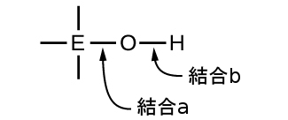
もし中心原子Eが低い電気陰性度を有する場合、それが電子に及ぼす引力は小さいです。中心原子が酸素原子と強い共有結合を形成する傾向はほとんどなく、この元素と酸素の間の結合aは酸素と水素の間の結合bよりも容易に壊れやすいです。したがって、結合aはイオン性であり、水酸化物イオンは溶液へと放出され、その物質は塩基として振る舞います—これはCa(OH)₂とKOHの場合に当てはまります。より低い電気陰性度は、より金属的な元素の特徴です。したがって、金属元素はイオン性水酸化物(定義によって塩基性の化合物です)を形成します。
一方、もしE原子が比較的高い電気陰性度を持つ場合には、それは酸素原子と共有する電子を強く引き寄せ、比較的強い共有結合を形成します。そして、酸素-水素結合である結合bは、電子がEに向かって変位するため、弱くなります。結合bは極性であり、水素イオンを溶液中に放出しやすいため、その物質は酸のように振る舞います。高い電気陰性度は、より非金属的な元素の特徴的です。このため、非金属元素は酸性の-OH基を含む共有結合化合物を形成し、それはオキシ酸と呼ばれます。
中心原子Eの酸化数が増加すると、オキシ酸の酸性度も高くなります。なぜなら、それによって、中心原子Eが酸素と共有する電子に対するEの引力が増し、O-H結合が弱くなるからです。硫酸H₂SO₄、またはO₂S(OH)₂(+6の硫黄の酸化数を持ちます)は、亜硫酸H₂SO₃、またはOS(OH)₂(+4の硫黄の酸化数を持ちます)よりも酸性です。同様に、硝酸HNO₃、またはO₂NOH(Nの酸化数= +5)は、亜硝酸HNO₂、またはONOH(Nの酸化数= +3)よりも酸性です。いずれのペアも、強い酸ほど中心原子の酸化数は大きいです(図14.12)。
図14.12 | 中心原子Eの酸化数が大きくなると、酸性度も大きくなります。
中間的な電気陰性度と比較的高い酸化数を持つ元素(たとえば、周期表の金属と非金属を分ける斜線付近の元素)のヒドロキシ化合物は、通常は両性です。これは、そのヒドロキシ化合物が、強塩基と反応するときには酸として作用し、強酸と反応するときには塩基として作用することを意味しています。水酸化アルミニウム(一般的に水和物Al(H₂O)₃(OH)₃として存在します)の両性の性質は、それが強酸と強塩基の両方へと溶解することに反映されています。強塩基の中では、比較的不溶性の水酸化アルミニウム水和物Al(H₂O)₃(OH)₃は、水酸化物イオンと反応して可溶性イオン[Al(H₂O)₂(OH)₄]⁻に変換されます:
\[ \rm Al(H_2 O)_3 (OH)_3\ (aq) + OH^−\ (aq) ⇌ H_2 O\ (l) + [Al(H_2 O)_2 (OH)_4 ]^−\ (aq) \]
この反応では、アルミニウムが結合したH₂O分子の1つから溶液中の水酸化物イオンに陽子が移動します。このような条件下では、Al(H₂O)₃(OH)₃化合物は酸として作用します。一方、強酸の中に溶解するときには、それはヒドロニウムイオンと反応して可溶性イオン[Al(H₂O)₆]³⁺に変換されます:
\[ {\rm 3H_3 O^+\ (aq) + Al(H_2 O)_3 (OH)_3\ (aq) ⇌ {Al(H_2 O)_6}^{3+}\ (aq) + 3H_2 O\ (l)} \]
この場合、溶液中のヒドロニウムイオンからAl(H₂O)₃(OH)₃に陽子が移動し、この化合物は塩基として機能します。
14.4 塩の加水分解
この節が終わるまでに、あなたは次のことができるようになります:
•塩溶液が酸性、塩基性、または中性かどうかを予測する
•塩溶液中のさまざまな種の濃度を計算する
•水和金属イオンの酸イオン化について記述する
酸性イオンを含む塩
塩は、カチオンとアニオンからなるイオン化合物であり、いずれかのイオンが水と酸イオン化反応または塩基イオン化反応を起こすことができます。したがって、塩の水溶液は、塩を構成するイオンの相対的な酸-塩基の強さに応じて、酸性、塩基性、または中性になることがあります。たとえば、塩化アンモニウムを水に溶解させると、以下の反応式で表されるように解離します。
\[ {\rm NH_4 Cl\ (s) ⇌ {NH_4}^+\ (aq) + Cl^−\ (aq)} \]
アンモニウムイオンは塩基性のアンモニアNH₃の共役酸です。その酸イオン化(または酸加水分解)反応は以下のように表されます。
\[ {\rm {NH_4}^+\ (aq) + H_2 O\ (l) ⇌ H_3 O^+\ (aq) + NH_3\ (aq)} \hspace{20pt} K_{\rm a} = K_{\rm w} /K_{\rm b} \]
アンモニアは弱塩基なので、Kbは測定可能であり、Ka > 0です(アンモニウムイオンは弱酸です)。
塩化物イオンは塩酸の共役塩基なので、その塩基イオン化(または塩基加水分解)反応は以下のように表されます。
\[ {\rm Cl^−\ (aq) + H_2 O\ (l) ⇌ HCl\ (aq) + OH^−\ (aq)} \hspace{20pt} K_{\rm b} = K_{\rm w} /K_{\rm a} \]
HClは強酸なので、Kaは測定できないほど大きく、Kb≈0です(塩化物イオンは感知できるほどの加水分解を行いません)。したがって、塩化アンモニウムを水に溶解させると、弱酸性のカチオン(NH₄⁺)と不活性のアニオン(Cl⁻)の溶液が得られ、酸性溶液となります。
例題14.15 酸性の塩の溶液のpHを計算する
アニリンは染料の製造に使用されるアミンです。それは、弱塩基のアニリンと塩酸を反応させることによって調製した塩である塩化アニリニウム[C₆H₅NH₃⁺]Clとして単離されます。塩化アニリニウムの0.233M溶液のpHは何ですか?
\[ {\rm {C_6 H_5 NH_3}^+\ (aq) + H_2 O\ (l) ⇌ H_3 O^+\ (aq) + C_6 H_5 NH_2\ (aq)} \]
解法
アニリニウムイオンのKaは、その共役塩基であるアニリンのKbから導出されます(付録H参照):
\[ K_{\rm a} =\frac{K_{\rm w}}{K_{\rm b}}=\frac{1.0 × 10^{−14}}{4.3 × 10^{−10}}= 2.3 × 10^{−5}\\ \]
与えられた情報を使用して、この系のICE表を作成します:
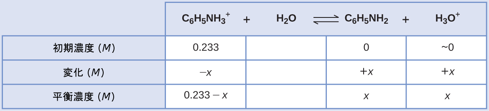
これらの平衡濃度の項をKaの式に代入すると、以下のようになります。
\[ K_{\rm a} = {\rm [C_6 H_5 NH_2 ][H_3 O^+ ]/[{C_6 H_5 NH_3}^+ ]}\\ 2.3 × 10^{−5} = (x)(x)/(0.233 − x)\\ \]
x << 0.233と仮定して、式を簡略化してxについて解きます:
\[ 2.3 × 10^{−5} = x^2 /0.233\\ x = 0.0023\ M\\ \]
ICE表ではxをヒドロニウムイオンのモル濃度として定義しているので、pHは以下のように計算されます。
\[ {\rm pH = − \log[H_3 O^+ ] = −\log(0.0023) = 2.64} \]
学習内容の確認
硝酸アンモニウムNH₄NO₃(NH₄⁺イオンとNO₃⁻イオンからなる塩)の 0.100M 溶液中のヒドロニウムイオン濃度は何ですか?C₆H₅NH₃⁺とNH₄⁺では、どちらがより強い酸ですか?
解答:[H₃O⁺] = 7.5 × 10⁻⁶M。C₆H₅NH₃⁺がより強い酸です。
塩基性イオンを含む塩
別の例として、酢酸ナトリウムを水に溶解させることを考えてみましょう:
\[ {\rm NaCH_3 CO_2\ (s) ⇌ Na^+\ (aq) + {CH_3 CO_2}^−\ (aq)} \]
ナトリウムイオンは、酸イオン化や塩基イオン化を行わず、溶液のpHに影響を与えません。このことは、水素原子や酸素原子を含まないイオンの式から明らかなように思われるかもしれませんが、この節で後述するように、いくつかの溶解した金属イオンは弱酸として機能します。
酢酸イオンCH₃CO₂⁻は酢酸CH₃CO₂H の共役塩基であるため、その塩基イオン化(または塩基加水分解)反応は以下のように表されます。
\[ {\rm {CH_3 CO_2}^−\ (aq) + H_2 O\ (l) ⇌ CH_3 CO_2 H\ (aq) + OH^−\ (aq)} \hspace{20pt} K_{\rm b} = K_{\rm w} /K_{\rm a}\\ \]
酢酸は弱酸であるため、そのKaは測定可能であり、Kb > 0です(酢酸イオンは弱塩基です)。
酢酸ナトリウムを水に溶解させると不活性のカチオン(Na⁺)と弱塩基性のアニオン(CH₃CO₂⁻)の溶液が得られ、塩基性溶液となります。
例題14.16 弱酸と強塩基の塩の溶液中の平衡
平衡において、[CH₃CO₂⁻] = 0.050 M、[OH⁻] = 2.5 × 10⁻⁶M の溶液中の酢酸濃度を決定してください。反応は:
\[ {\rm {CH_3 CO_2}^−\ (aq) + H_2 O\ (l) ⇌ CH_3 CO_2 H\ (aq) + OH^−\ (aq)}\\ \]
解法
与えられた平衡濃度と平衡定数の値により、欠落している平衡濃度を計算することができます。問題となっているプロセスは、酢酸イオンの塩基イオン化です。
\[ K_{\rm b} ({\rm CH_3 CO_2}^−について) =\frac{K_{\rm w}}{K_{\rm a} ({\rm CH_3 CO_2 H}について)}=\frac{1.0 × 10^{−14}}{1.8 × 10^{−5}}=5.6 × 10^{−10}\\ \]
利用可能な値をKbの式に代入すると、以下のようになります。
\[ K_{\rm b} =\frac{\rm [CH_3 CO_2 H][OH^− ]}{\rm [{CH_3 CO_2}^− ]}= 5.6 × 10^{−10}\\ =\frac{\rm [CH_3 CO_2 H](2.5 × 10^{−6})}{(0.050)}= 5.6 × 10^{−10}\\ \]
酢酸のモル濃度について上記の式を解くと、[CH₃CO₂H] = 1.1 × 10⁻⁵Mが得られます。
学習内容の確認
NaCNの0.083M溶液のpHは何ですか?
解答:11.11
酸性イオンと塩基性イオンを含む塩
いくつかの塩は、酸性イオンと塩基性イオンの両方で構成されているので、その溶液のpHは、これらの2つの種の相対的な強さに依存します。同様に、いくつかの塩は両性であるような単一のイオンを含むため、このイオンの酸と塩基の特性の相対的な強さが、溶液のpHに与える影響を決定します。両方のタイプの塩について、KaとKbの値を比較することにより、溶液の酸と塩基の状態を予測することができます。これは、次の例題の演習で説明されています。
例題14.17 塩の酸性または塩基性の性質を決定する
以下の塩の水溶液が酸性、塩基性、または中性のいずれであるかを決定してください:
(a)KBr
(b)NaHCO₃
(c)Na₂HPO₄
(d)NH₄F
解法
ここに示されるように、溶液のpHに及ぼす影響の観点から、それぞれのイオンを個別に考えてみましょう:
(a)K⁺カチオンは不活性で、pHに影響を与えません。臭化物イオンは強酸の共役塩基なので、無視できるほどの強さの塩基です(感知できるほどの塩基イオン化はありません)。溶液は中性です。
(b)Na⁺カチオンは不活性で、溶液のpHに影響を与えません。一方で、HCO₃⁻アニオンは両性です。HCO₃⁻のKaは4.7×10⁻¹¹であり、そのKbは
\[ K_{\rm b}=\frac{1.0 × 10^{−14}}{4.3 × 10^{−7}}= 2.3 × 10^{−8}\\ \]
Kb >> Ka なので、溶液は塩基性です。
(c)Na⁺カチオンは不活性で、溶液のpHに影響を与えません。一方で、HPO₄²⁻アニオンは両性です。HPO₄²⁻のKaは 4.2 × 10⁻¹³であり、そのKbは
\[ K_{\rm b}=\frac{1.0 × 10^{−14}}{6.2 × 10^{−8}}= 1.6 × 10^{−7}\\ \]
Kb >> Ka なので、溶液は塩基性です。
(d)NH₄⁺イオンは酸性(上述の議論を参照)であり、F⁻イオンは塩基性(弱酸のHFの共役塩基)です。2つのイオン化定数を比較します:NH₄⁺のKaは5.6 × 10⁻¹⁰であり、F⁻のKbは1.6 × 10⁻¹¹であり、Ka > Kbなので、溶液は酸性です。
学習内容の確認
以下の塩の水溶液が酸性、塩基性、または中性のいずれであるかを決定してください:
(a)K₂CO₃
(b)CaCl₂
(c)KH₂PO₄
(d)(NH₄)₂CO₃
解答:(a)塩基性、(b)中性、(c)酸性、(d)塩基性
水和金属イオンのイオン化
先の例の第1族と第2族の金属イオン(Na⁺、Ca²⁺、など)とは異なり、いくつかの金属イオンは水溶液中で酸として機能します。これらのイオンは、溶解したときに水分子によって単に緩く溶媒和されるのではなく、一定数の水分子と共有結合して錯イオンを生成します(配位化学の章を参照)。例として、硝酸アルミニウムの水への溶解は、一般的に以下のように表されます。
\[ {\rm Al(NO_3 )_3\ (s) ⇌ Al^{3+}\ (aq) + {3NO_3}^−\ (aq)} \]
しかしながら、アルミニウム(III)イオンは実際には6つの水分子と反応して安定な錯イオンを形成するため、溶解プロセスをより明示的に表現すると以下のようになります。
\[ {\rm Al(NO_3 )_3\ (s) + 6H_2 O\ (l) ⇌ {Al(H_2 O)_6}^{3+}\ (aq) + {3NO_3}^−\ (aq)}\\ \]
図14.13に示されるように、Al(H₂O)₆³⁺イオンは、中心のAl原子と6つの水分子のO原子との間の結合を含んでいます。その結果、結合した水分子のO-H結合は非結合の水分子に比べて極性が高く、結合した分子は水素イオンを供与しやすくなります:
\[ {\rm {Al(H_2 O)_6}^{3+}\ (aq) + H_2 O\ (l) ⇌ H_3 O^+\ (aq) + Al(H_2 O)_5 (OH)^{2+}\ (aq)} \hspace{20pt} K_{\rm a} = 1.4 × 10^{−5}\\ \]
このプロセスによって生成された共役塩基は、酸として作用することのできる他の5つの結合した水分子を含んでいるので、以下のいくつかの式で示されるように、連続的または段階的な陽子の移動が可能です:
\[ {\rm \hspace{23pt} {Al(H_2 O)_6}^{3+}\ (aq) + H_2 O\ (l) ⇌ H_3 O^+\ (aq) + Al(H_2 O)_5 (OH)^{2+}\ (aq)}\\ {\rm Al(H_2 O)_5 (OH)^{2+}\ (aq) + H_2 O\ (l) ⇌ H_3 O^+\ (aq) + {Al(H_2 O)_4 (OH)_2}^+\ (aq)}\\ {\rm {Al(H_2 O)_4 (OH)_2}^+\ (aq) + H_2 O\ (l) ⇌ H_3 O^+\ (aq) + Al(H_2 O)_3 (OH)_3\ (aq)}\\ \]
これは、本章の後の節での議論のトピックである多塩基酸の一例です。
図14.13 | アルミニウムイオンが水と反応すると、水和したアルミニウムイオンは弱酸になります。
アルカリ金属(第1族)および一部のアルカリ土類金属(第2族)を除いて、他のほとんどの金属イオンは、水に溶解したときにある程度の酸イオン化を行います。これらの錯イオンの酸の強さは、通常、金属イオンの電荷が増加するにつれて、そして、金属イオンのサイズが小さくなるにつれて、増加します。他のいくつかの酸性の金属イオンについての第1段階の酸イオン化の反応式が以下に示されています:
\[ {\rm {Fe(H_2 O)_6}^{3+}\ (aq) + H_2 O\ (l) ⇌ H_3 O^+\ (aq) + Fe(H_2 O)_5 (OH)^{2+}\ (aq) \hspace{20pt} p}K_{\rm a} = 2.74\\ {\rm {Cu(H_2 O)_6}^{2+}\ (aq) + H_2 O\ (l) ⇌ H_3 O^+\ (aq) + Cu(H_2 O)_5 (OH)^+\ (aq) \hspace{20pt} p}K_{\rm a} = \sim 6.3\\ {\rm {Zn(H_2 O)_4}^{2+}\ (aq) + H_2 O\ (l) ⇌ H_3 O^+\ (aq) + Zn(H_2 O)_3 (OH)^+\ (aq) \hspace{20pt} p}K_{\rm a} = 9.6\\ \]
例題14.18 [Al(H₂O)₆]³⁺の加水分解
完全に溶解して水和アルミニウムイオン[Al(H₂O)₆]³⁺を与える塩化アルミニウムの0.10M溶液のpHを計算してください。
解法
反応式とKaは以下の通りです:
\[ {\rm {Al(H_2 O)_6}^{3+}\ (aq) + H_2 O\ (l) ⇌ H_3 O^+\ (aq) + Al(H_2 O)_5 (OH)^{2+}\ (aq)} \hspace{20pt} K_{\rm a} = 1.4 × 10^{−5} \]
与えられた情報を含むICE表は
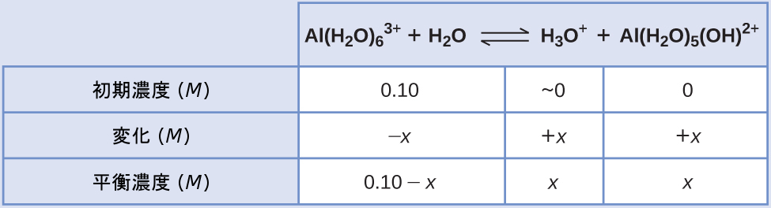
平衡濃度の式をイオン化定数の式に代入すると、以下が得られます:
\[ K_{\rm a} =\frac{\rm [H_3 O^+ ][Al(H_2 O)_5 (OH)^{2+} ]}{\rm [{Al(H_2 O)_6}^{3+} ]}=\frac{(x)(x)}{0.10 − x}= 1.4 × 10^{−5}\\ \]
x << 0.10と仮定して、簡略化された方程式を解くと、以下のようになります:
\[ x = 1.2 × 10^{−3}\ M\\ \]
ICE表ではxをヒドロニウムイオン濃度に等しいと定義していたので、pHは以下のように計算できます。
\[ {\rm [H_3 O^+ ]} = 0 + x = 1.2 × 10^{−3}\ M\\ {\rm pH = −\log[H_3 O^+ ]} = 2.92\ (酸性溶液)\\ \]
学習内容の確認
[H₃O⁺]を0.10Mとするのに十分な強酸HNO₃を含んでいるようなAl(NO₃)₃の 0.15M溶液中での[Al(H₂O)₅(OH)²⁺]は何ですか?
解答:2.1 × 10⁻⁵M
14.5 多塩基酸
この節が終わるまでに、あなたは次のことができるようになります:
•以前に紹介した平衡の概念を、複数の陽子を供与または受容する酸と塩基にまで拡張する
酸は、反応において供与できる1分子あたりの陽子の数によって分類されます。HCl、HNO₃、HCNのように、1分子に1つのイオン化可能な水素原子を含む酸は、一塩基酸と呼ばれます。それらと水との反応は以下のようになります:
\[ {\rm HCl\ (aq) + H_2 O\ (l) ⟶ H_3 O^+\ (aq) + Cl^−\ (aq)}\\ {\rm HNO_3\ (aq) + H_2 O\ (l) ⟶ H_3 O^+\ (aq) + {NO_3}^−\ (aq)}\\ {\rm HCN\ (aq) + H_2 O\ (l) ⇌ H_3 O^+\ (aq) + CN^−\ (aq)}\\ \]
酢酸(CH₃CO₂H)は4つの水素原子を含んでいるにもかかわらず、やはり一塩基性です。なぜなら、カルボキシル基(COOH)の水素原子だけが塩基と反応するからです:
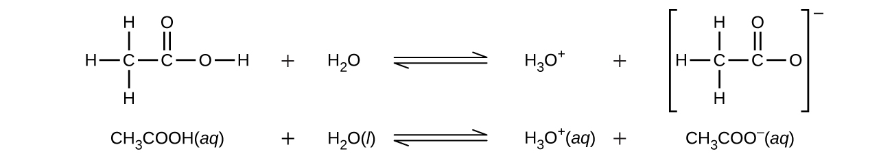
同様に、一塩基性の塩基は、単一の陽子を受け入れる塩基のことです。
二塩基酸は、1分子あたり2つのイオン化可能な水素原子を含みます。このような酸のイオン化は2つの段階で行われます。第1のイオン化は常に第2のイオン化よりも大きな程度でもって行われます。たとえば、強酸である硫酸は以下のようにイオン化します:
\[ 第1のイオン化:{\rm H_2 SO_4\ (aq) + H_2 O\ (l) ⇌ H_3 O^+\ (aq) + {HSO_4}^−\ (aq)}\\ K_{\rm a1} = 10^2以上、完全な解離\\ 第2のイオン化:{\rm {HSO_4}^−\ (aq) + H_2 O\ (l) ⇌ H_3 O^+\ (aq) + {SO_4}^{2−}\ (aq)}\\ K_{\rm a2} = 1.2 × 10^{−2}\\ \]
この段階的なイオン化プロセスは、すべての多塩基酸について発生します。炭酸(H₂CO₃)は弱い二塩基酸の例です。炭酸の第1のイオン化では、少量のヒドロニウムイオンと重炭酸イオンが生成されます:
\[ 第1のイオン化:{\rm H_2 CO_3\ (aq) + H_2 O\ (l) ⇌ H_3 O^+\ (aq) + {HCO_3}^−\ (aq)}\\ K_{\rm H_2 CO_3} =\frac{\rm [H_3 O^+ ][{HCO_3}^− ]}{\rm [H_2 CO_3 ]}= 4.3 × 10^{−7}\\ \]
重炭酸イオンもまた酸として作用します。それはさらに少ない量でイオン化して、ヒドロニウムイオンと炭酸イオンを生成します。
\[ 第2のイオン化:{\rm {HCO_3}^−\ (aq) + H_2 O\ (l) ⇌ H_3 O^+\ (aq) + {CO_3}^{2−}\ (aq)}\\ K_{\rm {HCO_3}^−} =\frac{\rm [H_3 O^+ ][{CO_3}^{2−} ]}{\rm [{HCO_3}^− ]}= 4.7 × 10^{−11}\\ \]
KH₂CO₃は KHCO₃⁻よりも10⁴倍ほど大きいので、H₂CO₃は溶液中でのヒドロニウムイオンの主要な生成元です。これは、H₂CO₃のイオン化によって生成されたHCO₃⁻のうちごく少量だけが、イオン化してヒドロニウムイオン(および炭酸イオン)を生成することを意味し、H₃O⁺とHCO₃⁻の濃度は、H₂CO₃の純粋な水溶液中では実質的に等しいことを意味します。
弱い二塩基酸の第1のイオン化定数が第2のイオン化定数よりも少なくとも20倍以上大きい場合、第1のイオン化を別個に扱い、後続のイオン化から生じる種の濃度を計算する前に、第1のイオン化から生じる濃度を計算することが適切です。このアプローチは、以下の例題の演習で示されています。
例題14.19 二塩基酸のイオン化
「炭酸水」は、口当たりの良い量の溶解した二酸化炭素を含んでいます。この溶液は、CO₂が水と反応して炭酸(H₂CO₃)を形成するため、酸性です。初期の[H₂CO₃] = 0.033 Mで、CO₂が飽和した溶液中での[H₃O⁺]、[HCO₃⁻]、[CO₃²⁻]は何ですか?
\[ {\rm H_2 CO_3\ (aq) + H_2 O\ (l) ⇌ H_3 O^+\ (aq) + {HCO_3}^−\ (aq)} \hspace{20pt} K_{\rm a1} = 4.3 × 10^{−7}\\ {\rm {HCO_3}^−\ (aq) + H_2 O\ (l) ⇌ H_3 O^+\ (aq) + {CO_3}^{2−}\ (aq)} \hspace{20pt} K_{\rm a2} = 4.7 × 10^{−11}\\ \]
解法
イオン化定数で示されるように、H₂CO₃はHCO₃⁻よりもはるかに強い酸であるため、段階的なイオン化反応は別々に扱うことができます。
第1のイオン化反応は
\[ {\rm H_2 CO_3\ (aq) + H_2 O\ (l) ⇌ H_3 O^+\ (aq) + {HCO_3}^−\ (aq)} \hspace{20pt} K_{\rm a1} = 4.3 × 10^{−7}\\ \]
与えられた情報を使用して、この第1段階のICE表を作成します:
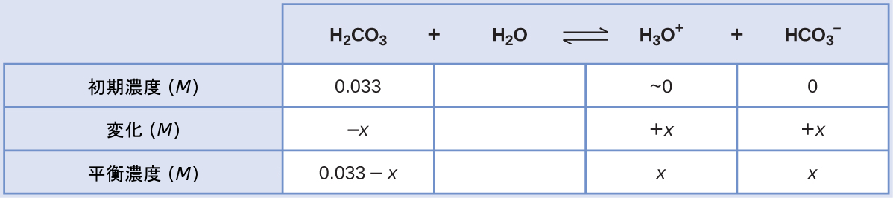
平衡濃度を平衡の式に代入すると、以下のようになります。
\[ K_{\rm H_2 CO_3} =\frac{\rm [H_3 O^+ ][{HCO_3}^− ]}{\rm [H_2 CO_3 ]}=\frac{(x)(x)}{0.033 − x}= 4.3 × 10^{−7}\\ \]
x << 0.033と仮定して、簡略化された方程式を解くと、以下のようになります。
\[ x = 1.2 × 10^{−4}\\ \]
ICE表では、xは重炭酸イオンのモル濃度とヒドロニウムイオンのモル濃度に等しいと定義されています:
\[ {\rm [H_2 CO_3 ]} = 0.033\ M\\ {\rm [H_3 O^+ ] = [{HCO_3}^− ]} = 1.2 × 10^{−4}\ M\\ \]
上で計算された重炭酸イオン濃度を使用して、第2のイオン化で同様の平衡計算を行います:
\[ {\rm {HCO_3}^−\ (aq) + H_2 O\ (l) ⇌ H_3 O^+\ (aq) + {CO_3}^{2−}\ (aq)}\\ K_{\rm {HCO_3}^−} =\frac{\rm [H_3 O^+ ][{CO_3}^{2−}]}{\rm [{HCO_3}^−]}=\frac{\rm (1.2 × 10^{−4} )[{CO_3}^{2−}]}{1.2 × 10^{−4}}\\ {\rm [{CO_3}^{2−}]} =\frac{(4.7 × 10^{-11})(1.2 × 10^{−4})}{1.2 × 10^{−4}}= 4.7 × 10^{-11}\ M\\ \]
まとめると:平衡では、[H₂CO₃] = 0.033 M、[H₃O⁺] = 1.2 × 10⁻⁴ M、[HCO₃⁻] = 1.2 × 10⁻⁴ M、[CO₃²⁻] = 4.7 × 10⁻¹¹ Mです。
学習内容の確認
室温での飽和水溶液中のH₂Sの濃度は約0.1Mです。この溶液中の[H₃O⁺]、[HS⁻]、[S²⁻]を計算してください。
\[ {\rm H_2 S\ (aq) + H_2 O\ (l) ⇌ H_3 O^+\ (aq) + HS^−\ (aq)} \hspace{20pt} K_{\rm a1} = 8.9 × 10^{−8}\\ {\rm HS^−\ (aq) + H_2 O\ (l) ⇌ H_3 O^+\ (aq) + S^{2−}\ (aq)} \hspace{20pt} K_{\rm a2} = 1.0 × 10^{−19}\\ \]
解答:[H₂S] = 0.1 M、[H₃O⁺] = [HS⁻] = 0.000094 M、[S²⁻] = 1 × 10⁻¹⁹ M
三塩基酸とは、イオン化可能なH原子を3つ有している酸のことです。リン酸がその一例です:
\[ 第1のイオン化:{\rm H_3 PO_4\ (aq) + H_2 O\ (l) ⇌ H_3 O^+\ (aq) + {H_2 PO_4}^−\ (aq)} \hspace{20pt} K_{\rm a1} = 7.5 × 10^{−3}\\ 第2のイオン化:{\rm {H_2 PO_4}^−\ (aq) + H_2 O\ (l) ⇌ H_3 O^+\ (aq) + {HPO_4}^{2−}\ (aq)} \hspace{20pt} K_{\rm a2} = 6.2 × 10^{−8}\\ 第3のイオン化:{\rm {HPO_4}^{2−}\ (aq) + H_2 O\ (l) ⇌ H_3 O^+\ (aq) + {PO_4}^{3−} (aq)} \hspace{20pt} K_{\rm a3} = 4.2 × 10^{−13}\\ \]
二塩基酸の例と同じように、それぞれの連続的なイオン化反応は前のものに比べてより程度が低いです。これは、段階的な酸イオン化定数が減少することに反映されています。これは多塩基酸の一般的な特徴であり、連続的なイオン化定数はしばしば約10⁵から10⁶の係数で異なります。
この3つの解離反応の組は、H₃PO₄の溶液中の平衡濃度の計算を複雑にするように見えるかもしれません。しかしながら、連続したイオン化定数が10⁵から10⁶の係数で異なるため、イオン化反応に伴う濃度の小さな変化には大きな違いが存在します。このため、上記の例題で示したように、数学的に単純化された仮定やプロセスを用いることができます。
多塩基性の塩基は、複数の水素イオンを受け入れることができます。炭酸イオンは、以下に示されるように、2つの陽子を受け入れることができるため、二塩基性の塩基の一例です。多塩基酸の場合と同じように、イオン化の段階に従ってイオン化定数が減少することに注意してください。同様に、多塩基性の塩基を含む平衡計算は、多塩基酸のためのものと同じアプローチに従います。
\[ {\rm H_2 O\ (l) + {CO_3}^{2−}\ (aq) ⇌ {HCO_3}^−\ (aq) + OH^−\ (aq)} \hspace{20pt} K_{\rm b1} = 2.1 × 10^{−4}\\ {\rm H_2 O\ (l) + {HCO_3}^−\ (aq) ⇌ H_2 CO_3\ (aq) + OH^−\ (aq)} \hspace{20pt} K_{\rm b2} = 2.3 × 10^{−8}\\ \]
14.6 緩衝液
この節が終わるまでに、あなたは次のことができるようになります:
•酸-塩基緩衝液の組成と機能を記述する
•酸または塩基を追加する前と追加した後の緩衝液のpHを計算する
弱い共役酸-塩基対をかなりの量で含んだ溶液は、緩衝溶液または緩衝液と呼ばれます。緩衝溶液は、少量の強酸や強塩基を加えてもpHの変化に抵抗します(図14.14)。酢酸と酢酸ナトリウム(CH₃COOH + CH₃COONa)の溶液は、弱酸とその塩からなる緩衝液の一例です。弱塩基とその塩からなる緩衝液の例としては、アンモニアと塩化アンモニウム(NH₃(aq) + NH₄Cl(aq))の溶液があります。
図14.14 | (a)左側の非緩衝溶液と右側の緩衝溶液は同じ pH (pH 8)を有しています。それらは塩基性であり、この pH では指示薬のメチルオレンジが黄色を示します。(b)0.01MのHCl溶液を1 mL加えた後でも、緩衝溶液には検知可能なpHの変化はありませんが、非緩衝溶液は酸性になっています。これはメチルオレンジの赤色(pHがおよそ4)への変化によって示されています。(credit: modification of work by Mark Ott)
緩衝液の機能の仕方
緩衝溶液の機能を説明するために、ほぼ等量の酢酸と酢酸ナトリウムの混合物を考えてみましょう。この溶液に弱い共役酸-塩基対が存在することで、ある程度の量の強酸や強塩基を加えても中和することができる能力が与えられます。たとえば、この溶液に強塩基を加えると、ヒドロニウムイオンが中和され、酢酸イオン化平衡が右側に移動し、減少したH₃O⁺濃度が部分的に回復します:
\[ {\rm CH_3 CO_2 H\ (aq) + H_2 O\ (l) ⇌ H_3 O^+\ (aq) + {CH_3 CO_2}^−\ (aq)} \]
同様に、この緩衝溶液に強酸を加えると酢酸イオンが中和され、上記のイオン化平衡が右側に移動して[H₃O⁺]が元の値に近い値に戻ります。図14.15は、強酸と強塩基を加えたときにこの緩衝溶液の中で生じる共役パートナー濃度の変化を図示したものです。この溶液の緩衝作用は、本質的には加えられた強酸と強塩基が緩衝液の共役対を構成する弱酸と弱塩基に変換された結果です。弱酸と弱塩基は強酸と強塩基の完全なイオン化に比べてわずかなイオン化を行うだけであり、したがって、溶液のpHは非緩衝溶液の場合よりも大幅には変化しません。
図14.15 | 酢酸と酢酸塩の混合物における緩衝作用。
例題14.20 緩衝溶液と非緩衝溶液のpH変化
酢酸緩衝液は、細胞の酵素や他の化学成分の生化学的研究において、これらの化合物の生化学的活性に影響を与える可能性のあるpHの変化を防ぐために使用されます。
(a)0.10 M 酢酸と 0.10 M 酢酸ナトリウムの混合物である酢酸緩衝液の pH を計算してください。
(b)この緩衝液100 mLに0.10 MのNaOHを1.0 mL加えた後のpHを計算してください。
(c)比較のため、pHが4.74の非緩衝溶液100 mLに0.10 MのNaOHを1.0 mL加えた後のpHを計算してください。
解法
(a)この平衡計算のためにICEのアプローチに従うと以下のようになります:
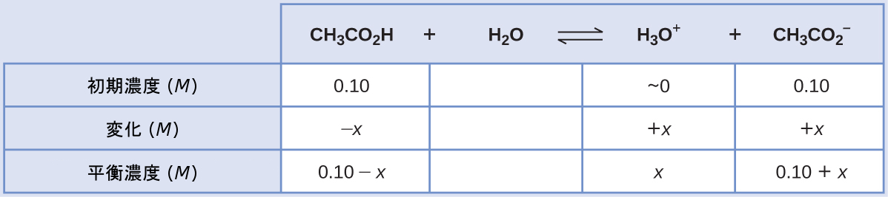
平衡濃度の項をKaの式に代入し、x << 0.10と仮定し、簡略化された式をxについて解くと、以下のようになります。
\[ x = 1.8 × 10^{−5}\ M\\ {\rm [H_3 O^+ ]} = 0 + x = 1.8 × 10^{−5}\ M\\ {\rm pH = −\log[H_3 O^+ ] = −\log(1.8 × 10^{−5})= 4.74}\\ \]
(b)この緩衝液 100 mL に0.10 MのNaOHを1.0 mL加えた後の pH を計算します。
強酸を加えると酢酸の一部が中和され、共役塩基の酢酸イオンが得られます。これら2つの緩衝液成分の新しい濃度を計算し、これらの新しい濃度を用いて(a)の平衡計算を繰り返します。
\[ {\rm 0.0010\ L ×\left(\frac{0.10\ mol\ NaOH}{1\ L}\right)= 1.0 × 10^{−4}\ mol\ NaOH}\\ \]
酢酸の初期モル量は
\[ {\rm 0.100\ L ×\left(\frac{0.100\ mol\ CH_3 CO_2 H}{1\ L}\right)= 1.00 × 10^{−2}\ mol\ CH_3 CO_2 H}\\ \]
加えられた塩基によって一部が中和された後に残る酢酸の量は
\[ {\rm (1.0 × 10^{−2}) − (0.01 × 10^{−2}) = 0.99 × 10^{−2}\ mol\ CH_3 CO_2 H}\\ \]
新しく生成された酢酸イオンは、最初に存在する酢酸と共に、最終的な酢酸濃度を与えます。
\[ {\rm (1.0 × 10^{−2}) + (0.01 × 10^{−2}) = 1.01 × 10^{−2}\ mol\ NaCH_3 CO_2}\\ \]
2つの緩衝液成分のモル濃度を計算します:
\[ {\rm [CH_3 CO_2 H] =\frac{9.9 × 10^{−3}\ mol}{0.101\ L}}= 0.098\ M\\ {\rm [NaCH_3 CO_2 ] =\frac{1.01 × 10^{−2}\ mol}{0.101\ L}}= 0.100\ M\\ \]
これらの濃度を使用して、溶液のpHは上記の設問(a)のように計算することができ、pH = 4.75が得られます(強塩基を加える前とはわずかに異なるだけです)。
(c)比較のため、pHが4.74の非緩衝溶液100 mLに0.10 MのNaOHを1.0 mL加えた後のpHを計算します。
溶液中に最初に存在するヒドロニウムイオンの量は
\[ {\rm [H_3 O^+ ]} = 10^{−4.74} = 1.8 × 10^{−5}\ M\\ {\rm mol\ H_3 O^+ = (0.100\ L)}(1.8 × 10^{−5}\ M) = {\rm 1.8 × 10^{−6}\ mol\ H_3 O^+}\\ \]
溶液に加えられる水酸化物イオンの量は
\[ {\rm mol\ OH^− = (0.0010\ L)}(0.10\ M) = {\rm 1.0 × 10^{−4}\ mol\ OH^−}\\ \]
加えられた水酸化物イオンは、この反応を介してヒドロニウムイオンを中和します。
\[ {\rm H_3 O^+\ (aq) + OH^−\ (aq) ⇌ 2H_2 O\ (l)}\\ \]
この反応の1:1の化学量論は、水酸化物が過剰に加えられていることを示しています(最初に存在しているヒドロニウムイオンよりもモル量が多いです)。
残った水酸化物イオンの量は
\[ {\rm 1.0 × 10^{−4}\ mol − 1.8 × 10^{−6}\ mol = 9.8 × 10^{−5}\ mol\ OH^−} \]
これは以下の水酸化物のモル濃度に対応します。
\[ {\rm 9.8 × 10^{−5}\ mol\ OH^− /0.101\ L} = 9.7 × 10^{−4}\ M\\ \]
そして、溶液のpHを計算すると
\[ {\rm pH = 14.00 − pOH = 14.00 − (-\log(9.7 × 10^{−4})) = 10.99}\\ \]
設問(b)の緩衝溶液で観察されたわずかな増加(4.74から4.75)と比較して、この非緩衝溶液では、塩基を加えたときにpHが顕著に上昇しています(4.74から10.99)。
学習内容の確認
0.10 MのHClを1.0 mL加えると、1.8 × 10⁻⁵MのHCl溶液 100 mL の pH が 4.74 から 3.00 に変化することを示してください。
解答:
1.8 × 10⁻⁵MのHClの初期のpH:
pH = −log[H₃O⁺] = −log[1.8 × 10⁻⁵] = 4.74
1.8 × 10⁻⁵MのHCl溶液 100 mLの中のH₃O⁺のモル:
1.8 × 10⁻⁵mol/L × 0.100 L = 1.8 × 10⁻⁶ mol
0.10 MのHClを1.0 mL加えることによって加えられるH₃O⁺のモル:
0.10 mol/L × 0.0010 L = 1.0 × 10⁻⁴ mol
0.10 MのHClを1.0 mL加えた後の最終的なpH:
\[ {\rm pH = −\log[H_3 O^+ ]\\ = −\log\left(\frac{全モル\ H_3 O^+}{全体積}\right)\\ = −log\left\lgroup\frac{1.0 × 10^{−4}\ mol + 1.8 × 10^{−6}\ mol}{101\ mL\left(\frac{1\ L}{1000\ mL}\right)}\right\rgroup = 3.00}\\ \]
緩衝能
緩衝液はpHを比較的一定に保つための無限の能力を持っているわけではありません(図14.16)。そうではなくて、緩衝溶液が pH の変化に抵抗する能力は、その弱い共役酸-塩基対がかなりの量で存在していることに依拠しています。緩衝液の対のいずれかの要素の濃度を大幅に下げるのに十分な量の強酸や強塩基を追加すると、溶液中の緩衝作用が損なわれます。
図14.16 | 指示薬(メチルオレンジ)の色は、pH8の緩衝溶液(左側のビーカー)に加えられた少量の酸が緩衝系(中央のビーカー)にほとんど影響を与えないことを示しています。しかしながら、多量の酸を加えると、溶液の緩衝能力が枯渇し、pHが劇的に変化します(右側のビーカー)。(credit: modification of work by Mark Ott)
緩衝能とは、pHが大きく変化するまで(通常は1単位変化するまで)に、所定量の緩衝液に加えることのできる酸または塩基の量のことです。緩衝能は、緩衝混合物に含まれる弱酸とその共役塩基の量に依存します。たとえば、酢酸が1.0M、酢酸ナトリウムが1.0Mである溶液の1Lは、酢酸が0.10M、酢酸ナトリウムが0.10Mである溶液の1Lよりも大きな緩衝能を有しています(両方の溶液が同じpHを有しているにもかかわらず)。最初の溶液は、より多くの酢酸と酢酸イオンを含んでいるため、より大きな緩衝能を有しています。
適切な緩衝混合物の選択
緩衝混合物を選択するには、2つの便利な経験則があります:
- 良い緩衝混合物は、その両方の成分の濃度がほぼ等しくあるべきです。緩衝対の一方の成分が他方の成分の約10%未満になると、一般的に緩衝溶液の有用性が失われます。図14.17は酢酸-酢酸イオン緩衝液に塩基を加えた場合のpHの変化を示しています。初期pHは4.74です。酢酸濃度が酢酸イオン濃度の11%まで低下したときに1pH単位の変化が起こります。
図14.17 | 最初に[CH₃CO₂H] = 0.10 M、[CH₃CO₂⁻] = 0.10 Mであった緩衝溶液100 mL に 0.10M の NaOH溶液を加えていくときの pH の変化。緩衝能に達した後は緩衝作用が大きく低下し、さらに強塩基を加えるとpHが急激に上昇することに注意してください。
- pHが7未満の場合は弱酸とその塩が緩衝液として優れており、pHが7超の場合は弱塩基とその塩が緩衝液として優れています。
血液は緩衝溶液の重要な例であり、緩衝作用を担う主たる酸とイオンは炭酸H₂CO₃と重炭酸イオンHCO₃⁻です。ヒドロニウムイオンが血液中に取り込まれると、それは主に以下の反応によって除去されます:
\[ {\rm H_3 O^+\ (aq) + {HCO_3}^−\ (aq) ⟶ H_2 CO_3\ (aq) + H_2 O\ (l)}\\ \]
加えられた水酸化物イオンは以下の反応により除去されます:
\[ {\rm OH^−\ (aq) + H_2 CO_3\ (aq) ⟶ {HCO_3}^−\ (aq) + H_2 O\ (l)}\\ \]
したがって、加えられた強酸または強塩基は、効果的に緩衝対のはるかに弱い酸または塩基に変換されます(H₃O⁺はH₂CO₃に変換され、OH⁻はHCO₃⁻に変換されます)。このようにして、人間の血液のpHは、緩衝対のpKaによって決定される値(この場合、7.35です)に非常に近いままにとどまります。血液pHの正常な変動は通常0.1未満であり、0.4以上のpH変化は致命的である可能性があります。
ヘンダーソン-ハッセルバルヒの式
弱酸の溶液のイオン化定数の式は以下のように書くことができます:
\[ K_{\rm a} =\frac{\rm [H_3 O^+ ][A^− ]}{\rm [HA]}\\ \]
並べ替えて[H₃O⁺]について解くと、以下のようになります:
\[ {\rm [H_3 O^+ ]} = K_{\rm a} ×\frac{\rm [HA]}{\rm [A^− ]}\\ \]
この式の両辺の負の対数をとると、以下のようになります。
\[ −\log{\rm [H_3 O^+ ]} = −\log K_{\rm a} − \log \frac{\rm [HA]}{\rm [A^− ]}\\ \]
これは以下のように書くことができます。
\[ {\rm pH = p}K_{\rm a} + \log\frac{\rm [A^− ]}{\rm [HA]}\\ \]
ここでpKaは弱酸のイオン化定数の負の対数(pKa = -log Ka)です。この式は、pH、弱酸のイオン化定数、および緩衝溶液中の弱い共役酸-塩基対の濃度を関連付けます。科学者たちはしばしば、緩衝溶液のpHを計算するために、ヘンダーソン-ハッセルバルヒの式と呼ばれるこの式を使用します。この式を使用するためには、「xは小さい」という仮定が妥当でなければならないことに注意しておくのが重要です。
化学者の肖像
ローレンス・ジョセフ・ヘンダーソンとカール・アルバート・ハッセルバルヒ
ローレンス・ジョセフ・ヘンダーソン(1878-1942)は、アメリカの医師、生化学者、生理学者ですが、これは彼の多くの仕事のほんの一部を挙げたにすぎません。彼はハーバード大学で医学の学位を取得し、当時ドイツの一部であったストラスブールで2年間研究した後、ハーバード大学で講師の職に就くために戻ってきました。その後、彼はハーバード大学の教授となり、そこで生涯の間働きました。彼は、人間の血液中の酸-塩基のバランスが、血液中の溶解した二酸化炭素によって形成される緩衝系によって調節されていることを発見しました。彼は1908年に、血液中の炭酸-炭酸塩緩衝系を記述するために1つの式を書きました。ヘンダーソンは幅広い知識を持っており、血液の生理学に関する重要な研究に加えて、生物の適応や環境への適応度、社会学、そして大学教育についても執筆しています。彼はまた、ハーバード・ビジネス・スクールに「疲労研究所」を設立し、産業界での仕事、運動、栄養摂取に特に焦点を当てた人間の生理学を研究しました。
デンマークの医師・化学者であるカール・アルバート・ハッセルバルヒ(1874-1962)は、1904年にクリスチャン・ボーアと共同執筆した論文で、血液中のヘモグロビンが酸素と結合する能力が血液の酸性度および二酸化炭素の濃度に反比例することを示した「ボーア効果」について述べています。pHスケールは、1909年に別のデンマーク人、セーレンセンによって導入され、1912年には、ハッセルバルヒは、血液のpHの測定値を発表しました。1916年、ハッセルバルヒはヘンダーソンの式を対数で表現し、pHの対数スケールと一致させたことによって、ヘンダーソン-ハッセルバルヒの式が誕生しました。
さまざまな科学のつながり
薬学:血液中の緩衝系
人間の血液の正常なpHは約7.4です。血液中の炭酸緩衝系は、以下の平衡反応を利用しています:
\[ {\rm CO_2\ (g) + 2H_2 O\ (l) ⇌ H_2 CO_3\ (aq) ⇌ {HCO_3}^−\ (aq) + H_3 O^+\ (aq)}\\ \]
炭酸(H₂CO₃)の濃度は約0.0012M、炭酸水素イオン(HCO₃⁻)の濃度は約0.024Mです。ヘンダーソン-ハッセルバルヒの式と体温での炭酸のpKaを用いて、血液のpHを計算することができます:
\[ {\rm pH = p}K_{\rm a} + \log\frac{[塩基]}{[酸]}= 6.4 + \log\frac{0.024}{0.0012}= 7.7\\ \]
H₂CO₃の濃度がHCO₃⁻イオンの濃度よりも著しく低いという事実は異常に思えるかもしれませんが、この不均衡は、私たちの血流に入る代謝の副生成物のほとんどが酸性であるという事実に起因しています。したがって、緩衝能を超えないように、酸よりも塩基の割合が大きくなければなりません。
乳酸は、私たちが運動すると筋肉の中で生成されます。この乳酸が血液中に入ると、HCO₃⁻イオンによって中和され、H₂CO₃が生成されます。その後、酵素によって余分な炭酸から二酸化炭素と水への分解が促進され、それらは呼吸によって排出されます。実際には、炭酸塩緩衝系が血液のpHを調整する効果に加えて、体は呼吸を使って血液のpHを調整しています。血液のpHが低下しすぎると、呼吸の増加によって、肺を介して血液からCO₂を除去し、平衡反応を促進して[H₃O⁺]を低下させます。血液がアルカリ性になりすぎた場合には、呼吸数を減らすと血液中のCO₂濃度が上昇し、逆方向に平衡反応を促進して[H⁺]を上昇させ、適切なpHを回復させます。
学習へのリンク
自然の水域で出会う緩衝系に関する情報については(http://openstaxcollege.org/l/16BufferSystem)を見てください。
14.7 酸-塩基滴定
この節が終わるまでに、あなたは次のことができるようになります:
•強い酸-塩基系と弱い酸-塩基系の滴定曲線を解釈する
•滴定の重要な段階で試料のpHを計算する
•酸-塩基指示薬の機能を説明する
化学反応の化学量論の章で見たように、滴定は溶液の酸または塩基濃度を定量的に分析するために使用することができます。この節では、私たちは、酸-塩基滴定法を有用な分析技術にする基礎となる化学平衡について探求していきます。
滴定曲線
滴定曲線は、溶液の何らかの性質と滴定剤を加えた量とをプロットしたものです。酸-塩基滴定では、溶液のpHが観察するのに便利な性質です。なぜなら、溶液のpHは、溶液の組成によって予測可能に変化するため、滴定の進行状況を監視し、終点を検出するのに使うことができるからです。以下の例題では、いくつかの特定の体積の滴定剤を加えた後の滴定溶液のpHを計算する方法を示しています。最初の例は強酸の滴定に関するもので、化学量論的な計算だけで溶液のpHを導出することができます。2つ目の例は弱酸の滴定の場合であり、平衡の計算が必要です。
例題14.21 滴定溶液のpHの計算:強酸/強塩基
0.100 MのHCl(強酸)25.00 mLに0.100 Mの強塩基NaOHを加えて滴定を行います(滴定曲線は、図14.18に示されています)。以下の体積の塩基性溶液を加えたときのpHを計算してください:
(a)0.00 mL
(b)12.50 mL
(c)25.00 mL
(d)37.50 mL
解法
(a)滴定剤の体積 = 0 mL。溶液のpHはHClの酸イオン化によるものです。これは強酸であるため、イオン化は完全であり、ヒドロニウムイオンのモル濃度は0.100Mです。したがって、溶液のpHは
\[ {\rm pH = − \log(0.100) = 1.000}\\ \]
(b)滴定剤の体積 = 12.50 mL。酸の試料と塩基の滴定剤はともに一塩基性で等しい濃度であるため、この加えた滴定剤の量は塩基の化学量論的な量よりも少なく、それは試料中の過剰な酸との反応によって完全に消費されます。残っている酸の濃度は、最初の量から消費された量を差し引いて、溶液の体積で割ることによって計算されます:
\[ {\rm [H_3 O^+]} =\frac{\rm n(H^+)}{V}=\frac{{\rm 0.002500\ mol×\left(\frac{1000\ mL}{1\ L}\right)}− 0.100\ M × {\rm 12.50\ mL}}{\rm 25.00\ mL + 12.50\ mL}= 0.0333\ M\\ \]
(c)滴定剤の体積 = 25.00 mL。この加えた滴定剤の量は、塩基の化学量論的な量(当量点)を含むため、溶液中には中和反応の生成物(水とNaCl)のみが存在します。この塩のカチオンもアニオンも酸-塩基イオン化を行いません。ヒドロニウムイオンを生成する唯一のプロセスは水の自動分解です。この溶液は中性であり、pHは7.00です。
(d)滴定剤の体積 = 37.50 mL。これは当量点を超えて滴定剤が加えられることになります。そこで、水酸化物イオンの濃度を用いて溶液のpHを計算します:
\[ {\rm n(OH^−)_0 > n(H^+)_0}\\ {\rm [OH^−]} =\frac{\rm n(OH^−)}{V}=\frac{0.100\ M × {\rm 35.70\ mL − 0.002500\ mol×\left(\frac{1000\ mL}{1\ L}\right)}}{\rm 25.00\ mL + 37.50\ mL} = 0.0200\ M\\ {\rm pH = 14 − pOH = 14 + \log([OH^−]) = 14 + \log(0.0200) = 12.30}\\ \]
学習内容の確認
0.100 MのHNO₃(aq) 50.0 mLと0.200 MのNaOH(滴定剤)の間での強酸/強塩基滴定のpHを計算してください。加えられる塩基の体積は:0.00 mL、15.0 mL、25.0 mL、40.0 mL とします。
解答:0.00mL:1.000、15.0mL:1.5111、25.0mL:7、40.0mL:12.523
例題14.22 強塩基による弱酸の滴定
0.100 MのCH₃CO₂H溶液25.00 mLを0.100 MのNaOHで滴定する場合を考えてみましょう。この反応は以下のように表すことができます:
\[ {\rm CH_3 CO_2 H + OH^− ⟶ {CH_3 CO_2}^− + H_2 O}\\ \]
以下の体積のNaOH滴定剤を加えた後の滴定溶液のpHを計算してください:
(a)0.00 mL
(b)25.00 mL
(c)12.50 mL
(d)37.50 mL
解法
(a)初期のpHは、酢酸溶液について通常のICEのアプローチで計算します:
\[ K_{\rm a} =\frac{\rm [H_3 O^+ ][{CH_3 CO_2}^− ]}{\rm [CH_3 CO_2 H]}≈\frac{\rm [H_3 O^+ ]^2}{\rm [CH_3 CO_2 H]_0}\ であり\\ {\rm [H_3 O^+ ]} = \sqrt{K_{\rm a} × {\rm [CH_3 CO_2 H]}} = \sqrt{1.8 × 10^{−5} × 0.100} = 1.3 × 10^{−3}\\ {\rm pH} = −\log(1.3 × 10^{−3}) = 2.87\\ \]
(b)酸と滴定剤はともに一塩基性であり、試料溶液と滴定剤は等しい濃度です。したがって、この体積の滴定剤は当量点を表します。しかしながら、上記の強酸の例とは異なり、この場合の反応混合物には弱い共役塩基(酢酸イオン)が含まれています。溶液のpHは、酢酸イオンの塩基イオン化を考慮して計算されます。それは以下の濃度で表されます。
\[ {\rm \frac{0.00250\ mol}{0.0500\ L}}= 0.0500\ M\ {\rm {CH_3 CO_2}^−} \]
酢酸イオンの塩基イオン化は以下の式で表されます。
\[ {\rm {CH_3 CO_2}^−\ (aq) + H_2 O\ (l) ⇌ CH_3 CO_2 H\ (aq) + OH^−\ (aq)}\\ K_{\rm b} =\frac{{\rm [H^+ ][OH^− ]}}{K_{\rm a}}=\frac{K_{\rm w}}{K_{\rm a}}=\frac{1.0 × 10^{−14}}{1.8 × 10^{−5}}= 5.6 × 10^{−10}\\ \]
x << 0.0500と仮定すると、pHは通常のICEのアプローチで計算することができます:
\[ K_{\rm b} =\frac{x^2}{0.0500\ M}\\ x = {\rm [OH^−]} = 5.3 × 10^{−6}\\ {\rm pOH} = −\log(5.3 × 10^{−6}) = 5.28\\ {\rm pH} = 14.00 − 5.28 = 8.72\\ \]
この滴定の当量点のpHは、弱酸を強塩基で滴定する場合に予想されるように、7よりも顕著に大きいことに注意してください。
(c)滴定剤の体積 = 12.50 mL。この体積は滴定剤の化学量論的な量の2分の1なので、酢酸の2分の1が中和されて等しい量の酢酸イオンが得られることになります。したがって、これらの共役の酸-塩基パートナーの濃度は等しいです。pHを計算する便利な方法はヘンダーソン-ハッセルバルヒの式を使用することです:
\[ {\rm pH} = {\rm p}K_{\rm a} + \log\frac{[塩基]}{[酸]}= −\log(K_{\rm a}) + \log\frac{\rm [{CH_3 CO_2}^−]}{\rm [CH_3 CO_2 H]}= −\log(1.8 × 10^{−5}) + \log(1)\\ {\rm pH} = −\log(1.8 × 10^{−5}) = 4.74\\ \]
(弱酸の滴定における当量点の半分では、pH = pKa)
(d)滴定剤の体積 = 37.50 mL。この体積は、化学量論的に過剰な滴定剤、および、滴定生成物である酢酸イオンと過剰な強塩基の滴定剤との両方を含む反応溶液を表します。このような溶液では、溶液のpHは主として過剰な強塩基の量によって決定されます:
\[ {\rm [OH^−] =\frac{(0.003750\ mol − 0.00250\ mol)}{0.06250\ L}}= 2.00 × 10^{−2}\ M\\ {\rm pOH = −\log(2.00 × 10^{−2}) = 1.70\ および\ pH = 14.00 − 1.70 = 12.30}\\ \]
学習内容の確認
0.100 MのHCOOH(aq) (ギ酸) 50.0 mLと0.200 MのNaOH (滴定剤)の間での弱酸/強塩基滴定のpHを計算してください。加えられる塩基の体積は:0.00 mL、15.0 mL、25.0 mL、30.0 mLとします。
解答:0.00 mL:2.37、15.0 mL:3.92、25.00 mL:8.29、30.0 mL:12.097
前述の例と同様にして追加の計算を行うことで、滴定曲線をより完全に評価することができます。表14.2には、強酸および弱酸滴定のpH/体積データのペアの概要が示されており、図14.18にはそれらが滴定曲線としてプロットされています。これら2つの曲線を比較すると、いくつかの重要な概念が示されます。それは滴定の4つの段階を識別することによって、最もうまく述べることができます:
初期状態(加えられた滴定剤の体積 = 0 mL):pHは滴定される酸によって決定されます。2つの酸の試料は等しい濃度であるため、弱酸はより大きな初期pHを示すでしょう。
当量点の前(0 mL < V < 25 mL):溶液の pH は徐々に上昇し、酸は加えられた滴定剤との反応により消費されます。組成物には未反応の酸と、反応生成物(その共役塩基)が含まれます。
当量点(V = 25 mL):溶液組成が酸性から中性(強酸試料の場合)または塩基性(弱酸試料の場合)に変化する際に、pHの急激な上昇が観察され、pHは酸の共役塩基のイオン化によって決定されます。
当量点の後(V > 25 mL):pHは強塩基の滴定剤が過剰に加えられた量によって決定されます。両方の試料は同じ滴定剤で滴定されているため、この段階では両方の滴定曲線は類似しているように見えます。
表14.2
図14.18 | (a)0.100 MのHCl(強酸)25.00 mLを0.100 MのNaOH(強塩基)で滴定したときの滴定曲線は、、pH7.00の当量点を有しています。(b)0.100Mの酢酸(弱酸)25.00mLを0.100MのNaOH(強塩基)で滴定したときの滴定曲線は、pH8.72の当量点を有しています。
酸-塩基の指示薬
いくつかの有機物質は、ヒドロニウムイオン濃度が特定の値に達すると、希薄溶液中で色が変化します。たとえば、フェノールフタレインは、5.0×10⁻⁹M よりも大きい(pH < 8.3)ヒドロニウムイオン濃度を有する任意の水溶液中では無色の物質です。ヒドロニウムイオン濃度が5.0×10⁻⁹M 未満(pH > 8.3)であるようなより塩基性の溶液の中では、フェノールフタレインは赤色またはピンク色をしています。溶液のpHを決定するために使用することができるフェノールフタレインのような物質は、酸-塩基指示薬と呼ばれています。酸-塩基指示薬は、弱有機酸または弱有機塩基のいずれかです。
酸-塩基指示薬であるメチルオレンジ(弱酸)の溶液中での平衡は、以下の式で表すことができます。ここで、私たちは複雑なメチルオレンジ分子を簡単に表現するためにHInを用います:
\[ {\rm HIn\ (aq) + H_2 O\ (l) ⇌ H_3 O^+\ (aq) + In^−\ (aq)}\\ \hspace{4pt} 赤色 \hspace{140pt} 黄色\\ K_{\rm a} ={\rm \frac{[H_3 O^+ ][In^− ]}{[HIn]}= 4.0 × 10^{−4}}\\ \]
メチルオレンジのアニオンであるIn⁻は黄色であり、非イオン化した形態のHInは赤色です。私たちがメチルオレンジの溶液に酸を加えると、ヒドロニウムイオン濃度の増加により、ル・シャトリエの原理に従って、非イオン化された赤色の形態に向かって平衡が移動します。もし私たちが塩基を追加する場合には、黄色の形態に向かって平衡が移動します。この振る舞いは、緩衝液の作用に完全に類似しています。
指示薬溶液の知覚される色は、In⁻とHInという2つの種の濃度の比率によって決定されます。指示薬の大部分 (通常は約60～90%か、それ以上) がIn⁻として存在する場合、溶液の知覚される色は黄色です。大部分がHInとして存在する場合、溶液の色は赤色になります。ヘンダーソン-ハッセルバルヒの式は、指示薬溶液のpHとその組成(したがって、知覚される色)の間の関係性を理解するのに役立ちます:
\[ {\rm pH = p}K_{\rm a} + \log\left(\frac{\rm [In^− ]}{\rm [HIn]}\right)\\ \]
pH > pKa の溶液では、対数の項は正でなければならず、それは指示薬の共役塩基の形態が過剰であることを示しています(黄色の溶液)。pH < pKa の場合、対数の項は負でなければならず、それは共役酸が過剰であることを示します(赤色の溶液)。溶液のpHが指示薬のpKaに近い場合は、かなりの量の両方の共役パートナーが存在しており、溶液の色はそれぞれを足したように組み合わせたものです(黄色と赤色からオレンジ色が得られます)。酸-塩基指示薬の変色範囲(またはpH範囲)は、色の変化が観察されるpH値の範囲として定義され、ほとんどの指示薬では、この範囲は約pKa ± 1です。
広範囲のpH値をカバーする多くのさまざまな酸-塩基指示薬があり、それらを使って消去法により未知の溶液のおおよそのpHを決定することができます。万能指示薬とpH紙は指示薬の混合物を含んでおり、さまざまなpHでさまざまな色を示します。図14.19は、いくつかの指示薬とその色、およびその変色範囲を示しています。
図14.19 | この図は、いくつかの酸-塩基指示薬の変色範囲を示しています。
図14.20 | 酸-塩基指示薬の適切な選択を説明するための強酸と弱酸の滴定曲線。3つの指示薬はどれも、強酸の滴定の当量点で十分に鮮明な色の変化を示しますが、フェノールフタレインだけが弱酸の滴定での使用に適しています。
図14.20に示される滴定曲線は、特定の滴定に適した指示薬の選択を説明するものです。強酸の滴定では、3つの指示薬のどれを使っても、十分に鮮明な色の変化が得られ、正確に終点を決定できるはずです。この滴定では、24 mLの滴定剤を加えた後に、溶液のpHがメチルオレンジの変色範囲の下限に達し、その点では最初に赤色の溶液がオレンジ色に変化し始めます。25 mLの滴定剤を加えると(当量点)、pHは上限をはるかに超え、溶液は黄色になるでしょう。滴定の終点は、オレンジ色から黄色にはっきりと変化する滴定剤の体積として推定することができます。この色の変化は、ほとんどの人の目では正確に識別することが困難です。滴定の終点のより正確な推定は、リトマスまたはフェノールフタレインのいずれかを使用することで可能になります。どちらも25.00 mLの当量点のあたりで起こるpHの急激な上昇を包含する変色範囲を有しています。
図14.20の弱酸の滴定曲線は、3つの指示薬のうち1つだけが終点の検出に適していることを示しています。この滴定にメチルオレンジを使用した場合、溶液は比較的大きな体積の間隔(0～6 mL)にわたって赤色からオレンジ色、そして黄色へと徐々に色が変化し、当量点(25 mL)に到達するかなり前に色の変化が完了してしまいます。リトマスを使用した場合では、7～8 mLの滴定剤を加えた後に色の変化が始まり、当量点の直前に終了するような色の変化を示すでしょう。一方、フェノールフタレインは、滴定の当量点で起こるpHの急激な変化をうまく収める変色範囲を有しています。また、当量点の付近のわずかな体積の間隔内で無色からピンク色への鮮明な色の変化が観察されます。
重要用語
酸イオン化: 酸から水への陽子の移動を含む反応であって、ヒドロニウムイオンおよび酸の共役塩基を生成する
酸イオン化定数(Ka):酸イオン化反応の平衡定数
酸-塩基指示薬:弱酸または弱塩基で、その共役パートナーが異なる溶液の色を与える。溶液のpHを視覚的に評価するのに使用される
酸性:[H₃O⁺] > [OH⁻]である溶液
両性:ブレンステッド-ローリー酸-塩基反応において陽子を供与するか、または受け入れることのある種
両性:酸または塩基のどちらかとして作用することのできる種
自動イオン化: 同一の種の間の反応でイオン性の生成物が生成される。水の場合、この反応は陽子が移動してヒドロニウムイオンと水酸化物イオンを生成することを含む
塩基イオン化:水から塩基への陽子の移動を含む反応であって、水酸化物イオンおよび塩基の共役酸を生成する
塩基イオン化定数(Kb):塩基イオン化反応の平衡定数
塩基性:[H₃O⁺] < [OH⁻]である溶液
ブレンステッド-ローリー酸:陽子の供与体
ブレンステッド-ローリー塩基:陽子の受容体
緩衝液:弱い酸-塩基対をかなりの量で含む混合物であって、少量の酸または塩基が加えられた場合、緩衝液のpHは変化に抵抗する
緩衝能:pHが大きく変化するまで(通常は1pH単位変化するまで)に、緩衝溶液の体積に加えることができる酸または塩基の量
変色範囲:指示薬の色変化が観察されるpHの範囲
共役酸:塩基が陽子を得たときに生成される物質
共役塩基:酸が陽子を失ったときに生成される物質
二塩基酸:1分子ごとにイオン化可能な水素原子を2つ含む酸
二塩基性の塩基:2つの陽子を受け入れることができる塩基
ヘンダーソン-ハッセルバルヒの式:酸イオン化定数の式の対数バージョンで、緩衝溶液のpHを計算するのに便利な形式になっている
水のイオン積定数(Kw):水の自動イオン化の平衡定数
水平化効果:所与の溶媒中の溶質の酸-塩基の強さが、溶媒の特徴的な酸および塩基の種(水の中では、それぞれヒドロニウムイオンおよび水酸化物イオン)の強さによって制限されるという観察
一塩基酸:1分子ごとにイオン化可能な水素原子を1つ含む酸
中性:[H₃O⁺] = [OH⁻]である溶液を記述する
オキシ酸:酸性の性質を持つ三元化合物で、その分子は1つ以上のO原子に結合した非金属の中心原子を含み、O原子のうちの少なくとも1つはイオン化可能なH原子に結合している
イオン化率:初期の酸の濃度に対するイオン化した酸の濃度の割合を百分率で表したもの
pH:溶液中のヒドロニウムイオンの濃度の対数尺度
pOH:溶液中の水酸化物イオンの濃度の対数尺度
段階的なイオン化:陽子を順次失うことによって多塩基酸がイオン化されるプロセス
滴定曲線:試料の何らかの性質(pHなど)と加えられた滴定剤の量をプロットしたもの
三塩基酸:1分子ごとにイオン化可能な水素原子を3つ含む酸
重要な方程式
\(•K_{\rm w} = {\rm [H_3 O^+][OH^−]} = 1.0 × 10^{−14}\ ({\rm25 °C}で)\)
\(•{\rm pH = −\log[H_3 O^+ ]}\)
\(•{\rm pOH = −\log[OH^−]}\)
\(•{\rm [H_3 O^+ ] = 10^{−pH}}\)
\(•{\rm [OH^−] = 10^{−pOH}}\)
\(•{\rm pH + pOH = p}K_{\rm w} = 14.00\ ({\rm25 °C}で)\)
\(•K_{\rm a} =\frac{\rm [H_3 O^+ ][A^− ]}{\rm [HA]}\)
\(•K_{\rm b} =\frac{\rm [HB^+ ][OH^− ]}{\rm [B]}\)
\(•K_{\rm a} × K_{\rm b} = 1.0 × 10^{−14} = K_{\rm w}\)
\(•イオン化率 = \frac{\rm [H_3 O^+ ]_{eq}}{\rm [HA]_0}× 100\)
\(•{\rm p}K_{\rm a} = −\log K_{\rm a}\)
\(•{\rm p}K_{\rm b} = −\log K_{\rm b}\)
\(•{\rm pH = p}K_{\rm a} + \log\frac{\rm [A^− ]}{\rm [HA]}\)
この章のまとめ
14.1 ブレンステッド-ローリーの酸と塩基
陽子(水素イオン)を他の化合物に供与することができる化合物を、ブレンステッド-ローリー酸といいます。陽子を受け入れる化合物を、ブレンステッド-ローリー塩基といいます。ブレンステッド-ローリー酸が陽子を失った後に残った種が、その酸の共役塩基です。また、ブレンステッド-ローリー塩基が陽子を得たときに生成される種が、その塩基の共役酸です。したがって、酸-塩基反応は、酸から塩基に陽子が移動し、反応物の酸の共役塩基が生成され、反応物の塩基の共役酸が生成されるときに起こります。両生の種は陽子の供与体としても陽子の受容体としても機能することができます。水は最も重要な両性の種です。水は、自動イオン化を行うときにヒドロニウムイオン(H₃O⁺)と水酸化物イオン(OH⁻)の両方を生成することができます:
\[ {\rm 2H_2 O\ (l) ⇌ H_3 O^+\ (aq) + OH^−\ (aq)}\\ \]
水のイオン積Kwは、自動イオン化反応の平衡定数です:
\[ K_{\rm w} = {\rm [H_3 O^+ ][OH^− ] = 1.0 × 10^{−14}\ (25 °Cで)}\\ \]
14.2 pHとpOH
水の媒体中のヒドロニウムイオンと水酸化物イオンの濃度は、それぞれ対数のpHとpOHの値で表されることが多いです。25°Cでは、水の自動分解平衡のために、どの水溶液でもpHとpOHの和が14であることが必要です。水溶液中のヒドロニウムイオンと水酸化物イオンの相対濃度は、その状態が酸性([H₃O⁺] > [OH⁻])であるか、塩基性([H₃O⁺] < [OH⁻])であるか、中性([H₃O⁺] = [OH⁻])であるかを定義します。25 °Cでは、pH < 7 は酸性溶液、pH > 7 は塩基性溶液、pH = 7 は中性溶液を示します。
14.3 酸と塩基の相対的な強さ
酸と塩基の相対的な強さは、そのイオン化定数の大きさに反映されます。酸または塩基が強いほど、そのイオン化定数が大きくなります。共役酸-塩基対の強さの間には、逆数の関係が存在します:酸が強いほど、その共役塩基は弱くなります。水は、溶解した酸または塩基に対して水平化効果を発揮し、その特徴的なヒドロニウムイオンと水酸化物イオン(水に存在することのある最も強い酸と塩基)を生成するために完全に反応します。二元酸の強さは、周期表の周期に沿って左から右に増加する(CH₄ < NH₃ < H₂O < HF)とともに、族を下へ進むほど増加します(HF < HCl < HBr < HI)。同じ中心元素を含むオキシ酸の強さは、元素の酸化数が増加するにつれて増加します(H₂SO₃ < H₂SO₄)。また、オキシ酸の強さは、中心元素の電気陰性度が高くなるにつれて増加します(H₂SeO₄ < H₂SO₄)。
14.4 塩の加水分解
塩を構成するイオンは、酸性または塩基性の性質を有していることがあり、水に溶解するとイオン化して酸性または塩基性の溶液が得られます。酸性のカチオンは通常、弱塩基の共役パートナーであり、塩基性のアニオンは弱酸の共役パートナーです。多くの金属イオンは、溶解すると水分子に結合し、酸として機能することのある錯イオンを生成します。
14.5 多塩基酸
複数のイオン化可能な陽子を含む酸は、多塩基酸です。これらの酸は、単一の陽子の移動を伴う段階的なイオン化反応を行います。多塩基酸のイオン化定数は、後に続く段階ごとに減少します。これらの減少は、通常は十分に大きいため、それぞれの段階を別々に扱う単純な平衡計算が可能です。
14.6 緩衝液
かなりの量の弱い共役酸-塩基対を含む溶液は緩衝液と呼ばれています。緩衝溶液は少量の酸や塩基を加えてもpHがわずかに変化するだけです。多量の酸や塩基を加えると緩衝能を超えてしまい、一方の共役パートナーの大部分を消費して、それ以上の緩衝作用を妨げることになります。
14.7 酸-塩基滴定
酸-塩基滴定の滴定曲線は、典型的には、pHと加えられた滴定剤の体積をプロットしたものです。これらの曲線は、滴定の終点の正確な決定を可能にする適切な酸-塩基指示薬を選択するのに役立ちます。
練習問題
14.1 ブレンステッド-ローリーの酸と塩基
1.NH₃を共役酸と共役塩基の両方として示す反応式を書いてください。
2.H₂PO₄⁻が酸としても塩基としても作用することを示す反応式を書いてください。
3.以下のそれぞれの種がブレンステッド-ローリー酸として作用できることを、適切な正味イオン反応式によって示してください:
(a)H₃O⁺
(b)HCl
(c)NH₃
(d)CH₃CO₂H
(e)NH₄⁺
(f)HSO₄⁻
4.以下のそれぞれの種がブレンステッド-ローリー酸として作用できることを、適切な正味イオン反応式によって示してください:
(a)HNO₃
(b)PH₄⁺
(c)H₂S
(d)CH₃CH₂COOH
(e)H₂PO₄⁻
(f)HS⁻
5.以下のそれぞれの種がブレンステッド-ローリー塩基として作用できることを、適切な正味イオン反応式によって示してください:
(a)H₂O
(b)OH⁻
(c)NH₃
(d)CN⁻
(e)S²⁻
(f)H₂PO₄⁻
6.以下のそれぞれの種がブレンステッド-ローリー塩基として作用できることを、適切な正味イオン反応式によって示してください:
(a)HS⁻
(b)PO₄³⁻
(c)NH₂⁻
(d)C₂H₅OH
(e)O²⁻
(f)H₂PO₄⁻
7.以下のそれぞれの共役酸は何ですか?それぞれの共役塩基は何ですか?
(a)OH⁻
(b)H₂O
(c)HCO₃⁻
(d)NH₃
(e)HSO₄⁻
(f)H₂O₂
(g)HS⁻
(h)H₅N₂⁺
8.以下のそれぞれの共役酸は何ですか?それぞれの共役塩基は何ですか?
(a)H₂S
(b)H₂PO₄⁻
(c)PH₃
(d)HS⁻
(e)HSO₃⁻
(f)H₃O₂⁺
(g)H₄N₂
(h)CH₃OH
9.以下のそれぞれの反応式の中で、ブレンステッド-ローリー酸、その共役塩基、ブレンステッド-ローリー塩基、その共役酸を特定し、表示してください:
(a)HNO₃ + H₂O ⟶ H₃O⁺ + NO₃⁻
(b)CN⁻ + H₂O ⟶ HCN + OH⁻
(c)H₂SO₄ + Cl⁻ ⟶ HCl + HSO₄⁻
(d)HSO₄⁻ + OH⁻ ⟶ SO₄²⁻ + H₂O
(e)O²⁻ + H₂O ⟶ 2OH⁻
(f)[Cu(H₂O)₃(OH)]⁺ + [Al(H₂O)₆]³⁺ ⟶ [Cu(H₂O)₄]²⁺ + [Al(H₂O)₅(OH)]²⁺
(g)H₂S + NH₂⁻ ⟶ HS⁻ + NH₃
10.以下のそれぞれの反応式の中で、ブレンステッド-ローリー酸、その共役塩基、ブレンステッド-ローリー塩基、その共役酸を特定し、表示してください:
(a)NO₂⁻ + H₂O ⟶ HNO₂ + OH⁻
(b)HBr + H₂O ⟶ H₃O⁺ + Br⁻
(c)HS⁻ + H₂O ⟶ H₂S + OH⁻
(d)H₂PO₄⁻ + OH⁻ ⟶ HPO₄²⁻ + H₂O
(e)H₂PO₄⁻ + HCl ⟶ H₃PO₄ + Cl⁻
(f)[Fe(H₂O)₅(OH)]²⁺ + [Al(H₂O)₆]³⁺ ⟶ [Fe(H₂O)₆]³⁺ + [Al(H₂O)₅(OH)]²⁺
(g)CH₃OH + H⁻ ⟶ CH₃O⁻ + H₂
11.両性の種とは何ですか?適切な反応式を用いて説明してください。
12.以下の種のうちどれが両性であるかを述べ、それらの種の両性の性質を例示する化学反応式を書いてください:
(a)H₂O
(b)H₂PO₄⁻
(c)S²⁻
(d)CO₃²⁻
(e)HSO₄⁻
13.以下の種のうちどれが両性であるかを述べ、それらの種の両性の性質を例示する化学反応式を書いてください:
(a)NH₃
(b)HPO₄⁻
(c)Br⁻
(d)NH₄⁺
(e)ASO₄³⁻
14.水の自己イオン化は吸熱性ですか、発熱性ですか?水のイオン化定数(Kw)は40°Cで2.9×10⁻¹⁴、60°Cで9.3×10⁻¹⁴です。
14.2 pHとpOH
15.40°Cの純水の試料が[H₃O⁺] = 1.7 × 10⁻⁷Mであるにもかかわらず中性である理由を説明してください。Kwは、40 °Cで2.9 × 10⁻¹⁴です。
16.水のイオン化定数(Kw)は、40°Cで2.9×10⁻¹⁴です。40°Cの純水の[H₃O⁺]、[OH⁻]、pH、pOHを計算してください。
17.水のイオン化定数(Kw)は、60°Cで9.311×10⁻¹⁴です。60°Cの純水の[H₃O⁺]、[OH⁻]、pH、pOHを計算してください。
18.温度25°Cでの以下のそれぞれの溶液について、物質が完全にイオン化したときのpHとpOHを計算してください:
(a)0.200 MのHCl
(b)0.0143 MのNaOH
(c)3.0 MのHNO₃
(d)0.0031 MのCa(OH)₂
19.温度25°Cでの以下のそれぞれの溶液について、物質が完全にイオン化したときのpHとpOHを計算してください:
(a)0.000259 MのHClO₄
(b)0.21 MのNaOH
(c)0.000071 MのBa(OH)₂
(d)2.5 MのKOH
20.完全にイオン化したときの2.0MのHCl溶液のpHとpOHは何ですか?
21.pHが6.52の溶液のヒドロニウムイオン濃度と水酸化物イオン濃度は何ですか?
22.ワインのpHから、そのヒドロニウムイオン濃度と水酸化物イオン濃度を計算してください。有用な情報については、図14.2を参考にしてください。
23.ライムジュースのpHから、そのヒドロニウムイオン濃度と水酸化物イオン濃度を計算してください。有用な情報については、図14.2を参考にしてください。
24.雨水の試料中のヒドロニウムイオン濃度は、25°Cで1.7×10⁻⁶Mであることがわかりました。雨水中の水酸化物イオン濃度は何ですか?
25.家庭用アンモニア中の水酸化物イオン濃度は、25°Cで3.2×10⁻³Mであることがわかりました。この溶液中のヒドロニウムイオン濃度は何ですか?
14.3 酸と塩基の相対的な強さ
26.強酸と弱塩基の中和反応から弱い酸性の溶液が得られる理由を説明してください。
27.弱酸と強塩基の中和反応から弱い塩基性の溶液が得られる理由を説明してください。
28.この重要な工業用化合物のリスト(および図14.8)を使って、以下の質問に答えてください:CaO、Ca(OH)₂、CH₃CO₂H、CO₂、HCl、H₂CO₃、HF、HNO₂、HNO₃、H₃PO₄、H₂SO₄、NH₃、NaOH、Na₂CO₃
(a)強ブレンステッド-ローリー酸および強ブレンステッド-ローリー塩基を特定してください。
(b)設問(a)の化合物のうち、H₃O⁺とH₂Oの間の強さでブレンステッド-ローリー酸として振る舞うことができるものを挙げてください。
(c)設問(a)の化合物のうち、H₂OとOH⁻の間の強さでブレンステッド-ローリー塩基として振る舞うことができるものを挙げてください。
29.酢の匂いは酢酸CH₃CO₂H(弱酸)の存在によるものです。この酸の1M水溶液中に存在するすべてのイオン種および分子種を濃度が高いほうから順に列挙してください。
30.家庭用アンモニアは弱塩基NH₃の水溶液です。この塩基の1M水溶液中に存在するすべてのイオン種および分子種を濃度が高いほうから順に列挙してください。
31.H₂SO₄のイオン化定数KaがH₂SO₃のイオン化定数よりも大きい理由を説明してください。
32.HIのイオン化定数KaがHFのイオン化定数よりも大きい理由を説明してください。
33.胃の中で作られる消化液である胃液には、塩酸(HCl)が含まれています。マグネシア乳(水の媒体中での固体Mg(OH)₂の懸濁液)は、過剰な胃酸を中和するためにときどき使用されます。この中和反応について完全なバランスの取れた反応式を書き、共役酸-塩基対を特定してください。
34.硝酸は不溶性の酸化銅(II)と反応し、スイミングプールで藻の成長を防ぐために使われる化合物である可溶性の硝酸銅(II)(Cu(NO₃)₂)を形成します。HNO₃とCuOの水溶液の反応についてのバランスの取れた化学反応式を書いてください。
35.弱酸CH₃NH₃⁺は、弱塩基CH₃NH₂(Kb = 4.4 × 10⁻⁴)の共役酸です。この弱酸の25 °Cでのイオン化定数は何ですか?
36.弱酸(CH₃)₂NH₂⁺は、弱塩基(CH₃)₂NH(Kb = 5.9 × 10⁻⁴)の共役酸です。この弱酸の25 °Cでのイオン化定数は何ですか?
37.塩基CH₃NH₂と(CH₃)₂NHのうち、どちらが強い塩基ですか?共役酸(CH₃)₂NH₂⁺とCH₃NH₃⁺のうち、どちらが強い酸ですか?
38.NH₄⁺とHBrOのうち、どちらが強い酸ですか?
39.(CH₃)₃NとH₂BO₃⁻のうち、どちらが強い塩基ですか?
40.以下のそれぞれのペアのうち、どちらの酸が強いかを予測し、それぞれについてあなたの推論を説明してください。
(a)H₂OまたはHF
(b)B(OH)₃またはAl(OH)₃
(c)HSO₃⁻またはHSO₄⁻
(d)NH₃またはH₂S
(e)H₂OまたはH₂Te
41.以下のそれぞれの化合物のペアのうち、どちらの化合物がより酸性であるかを予測し、それぞれについてあなたの推論を説明してください。
(a)HSO₄⁻またはHSeO₄⁻
(b)NH₃またはH₂O
(c)PH₃またはHI
(d)NH₃またはPH₃
(e)H₂SまたはHBr
42.以下のそれぞれのグループの化合物を、酸性度または塩基性度(設問に示されています)が高くなる順にランク付けし、割り当てた順番について説明してください。
(a)酸性度:HCl、HBr、HI
(b)塩基性度:H₂O、OH⁻、H⁻、Cl⁻
(c)塩基性度:Mg(OH)₂、Si(OH)₄、ClO₃(OH) (ヒント:化学式はHClO₄としても書くことができるでしょう。)
(d)酸性度:HF、H₂O、NH₃、CH₄
43.以下のそれぞれのグループの化合物を、酸性度または塩基性度(設問に示されています)が高くなる順にランク付けし、割り当てた順番について説明してください。
(a)酸性度:NaHSO₃、NaHSeO₃、NaHSO₄
(b)塩基性度:BrO₂⁻、ClO₂⁻、IO₂⁻
(c)酸性度:HOCl、HOBr、HOI
(d)酸性度:HOCl、HOClO、HOClO₂ 、HOClO₃
(e)塩基性度:NH₂⁻、HS⁻、HTe⁻、PH₂⁻
(f)塩基性度:BrO⁻、BrO₂⁻、BrO₃⁻、BrO₄⁻
44.HFとHCNはどちらも水中では限られた程度でイオン化します。共役塩基F⁻とCN⁻のうち、どちらがより強い塩基ですか?
45.アスピリンによって体内で生成される有効成分は、サリチル酸C₆H₄OH(CO₂H)です。カルボキシル基(-CO₂H)は弱酸として作用します。フェノール基(芳香環に結合したOH基)も酸として作用しますが、はるかに弱い酸です。C₆H₄OH(CO₂H)の0.001M水溶液中に存在するすべてのイオン種と分子種を濃度が低くなる順に列挙してください。
46.酸または塩基の水溶液中のヒドロニウムイオンと水酸化物イオンの濃度は正比例または反比例していますか?あなたの答えを説明してください。
47.弱酸や弱塩基の溶液中の平衡濃度の計算を簡略化できる2つの一般的な仮定は何ですか?
48.以下のうち、水中でアンモニウムイオンに変換されるNH₃の割合を増加させるものはどれですか?
(a)NaOHを加える
(b)HClを加える
(c)NH₄Clを加える
49.以下のうち、水中でフッ化物イオンに変換されるHFの割合を増加させるものはどれですか?
(a)NaOHを加える
(b)HClを加える
(c)NaFを加える
50.KNO₂の水溶液に以下のものを加えたとき、NO₂⁻、HNO₂、およびOH⁻の濃度に及ぼす影響は何ですか?
(a)HCl
(b)HNO₂
(c)NaOH
(d)NaCl
(e)KNO
51.フッ化水素酸の別々の溶液に以下のものを加えたときの、フッ化水素酸、ヒドロニウムイオン、およびフッ化物イオンの濃度に及ぼす影響は何ですか?
(a)HCl
(b)KF
(c)NaCl
(d)KOH
(e)HF
52.HClが0.10M、HCOOHが0.10Mである溶液中のヒドロニウムイオン濃度は、なぜHClの濃度によって決定されるのでしょうか?
53.与えられた平衡濃度から、それぞれの弱酸についてはKaを、それぞれの弱塩基についてはKbを計算してください。
(a)CH₃CO₂H:
[H₃O⁺] = 1.34 × 10⁻³M
[CH₃CO₂⁻] = 1.34 × 10⁻³M
[CH₃CO₂H] = 9.866 × 10⁻²M
(b)ClO⁻:
[OH⁻] = 4.0 × 10⁻⁴M
[HClO] = 2.38 × 10⁻⁴M
[ClO⁻] = 0.273 M
(c)HCO₂H:
[HCO₂H] = 0.524 M
[H₃O⁺] = 9.8 × 10⁻³M
[HCO₂⁻] = 9.8 × 10⁻³M
(d)C₆H₅NH₃⁺:
[C₆H₅NH₃⁺] = 0.233 M
[C₆H₅NH₂] = 2.3 × 10⁻³M
[H₃O⁺] = 2.3 × 10⁻³M
54.与えられた平衡濃度から、それぞれの弱酸についてはKaを、それぞれの弱塩基についてはKbを計算してください。
(a)NH₃:
[OH⁻] = 3.1 × 10⁻³M
[NH₄⁺] = 3.1 × 10⁻³M
[NH₃] = 0.533 M
(b)HNO₂:
[H₃O⁺] = 0.011 M
[NO₂⁻] = 0.0438 M
[HNO₂] = 1.07 M
(c)(CH₃)₃N:
[(CH₃)₃N] = 0.25 M
[(CH₃)₃NH⁺] = 4.3 × 10⁻³M
[OH⁻] = 3.7 × 10⁻³M
(d)NH₄⁺:
[NH₄⁺] = 0.100 M
[NH₃] = 7.5 × 10⁻⁶M
[H₃O⁺] = 7.5 × 10⁻⁶M
55.亜硝酸イオンNO₂⁻のKbを決定してください。0.10M溶液では、この塩基は0.0015%イオン化されています。
56.硫酸水素イオンHSO₄⁻のKaを決定してください。0.10M溶液では、この酸は29%イオン化されています。
57.以下の酸または塩基のそれぞれについて、その共役塩基または共役酸のイオン化定数からそのイオン化定数を計算してください:
(a)F⁻
(b)NH₄⁺
(c)AsO₄³⁻
(d)(CH₃)₂NH₂⁺
(e)NO₂⁻
(f)HC₂O₄⁻(塩基として)
58.以下の酸または塩基のそれぞれについて、その共役塩基または共役酸のイオン化定数からそのイオン化定数を計算してください:
(a)HTe⁻(塩基として)
(b)(CH₃)₃NH⁺
(c)HAsO₄³⁻(塩基として)
(d)HO₂⁻(塩基として)
(e)C₆H₅NH₃⁺
(f)HSO₃⁻(塩基として)
59.Kaの値 1.4 × 10⁻⁵を用いて、Al(H₂O)₆³⁺を図14.7の正しい位置に配置してください。
60.以下の酸または塩基のそれぞれの溶液中のすべての溶質種の濃度を計算してください。水のイオン化を無視できると仮定し、初期濃度の変化を無視できることを示してください。
(a)0.0092 MのHClO(弱酸)
(b)0.0784 MのC₆H₅NH₂(弱塩基)
(c)0.0810 MのHCN(弱酸)
(d)0.11 Mの(CH₃)₃N(弱塩基)
(e)0.120 MのFe(H₂O)₆²⁺(弱酸)、Ka = 1.6 × 10⁻⁷
61.プロピオン酸C₂H₅CO₂H (Ka = 1.34 × 10⁻⁵)は、食品保存料であるプロピオン酸カルシウムの製造に使用されています。C₂H₅CO₂Hの 0.698M溶液のpHは何ですか?
62.ホワイトビネガーは、質量で5.0%の酢酸の水溶液です。ホワイトビネガーの密度を 1.007 g/cm³とすると、pHは何ですか?
63.激しい運動後の血液中に存在する酸である乳酸CH₃CH(OH)CO₂Hのイオン化定数は、1.36×10⁻⁴です。20.0 gの乳酸を用いて 1.00 Lの体積の溶液を作った場合、溶液中のヒドロニウムイオンの濃度は何ですか?
64.ニコチン(C₁₀H₁₄N₂)は、2つの陽子を受け入れる塩基です(Kb1 = 7 × 10⁻⁷、Kb2 = 1.4 × 10⁻¹¹)。ニコチンの0.050M溶液中に存在するそれぞれの種の濃度は何ですか?
65.HFの0.23M溶液のpHは1.92です。これらのデータからHFのKaを決定してください。
66.HSO₄⁻の0.15M溶液のpHは1.43です。これらのデータからHSO₄⁻のKaを決定してください。
67.カフェインの0.10M溶液のpHは11.70です。これらのデータからカフェインのKbを決定してください:
C₈H₁₀N₄O₂(aq) + H₂O(l) ⇌ C₈H₁₀N₄O₂H⁺(aq) + OH⁻(aq)
68.家庭用アンモニアの溶液(NH₃の 0.950 M 溶液)の pH は 11.612 です。これらのデータからNH₃のKbを決定してください。
14.4 塩の加水分解
69.以下の塩の水溶液が酸性、塩基性、または中性のいずれであるかを決定してください:
(a)Al(NO₃)₃
(b)RbI
(c)KHCO₂
(d)CH₃NH₃Br
70.以下の塩の水溶液が酸性、塩基性、または中性のいずれであるかを決定してください:
(a)FeCl₃
(b)K₂CO₃
(c)NH₄Br
(d)KClO₄
71.ノボカインC₁₃H₂₁O₂N₂Clは、塩基のプロカインと塩酸との塩です。プロカインのイオン化定数は 7 × 10⁻⁶です。ノボカインの溶液は酸性ですか塩基性ですか?溶液の密度が1.0 g/mLであると仮定した場合、質量で2.0%のノボカインの溶液の[H₃O⁺]、[OH⁻]、pHは何ですか?
14.5 多塩基酸
72.二塩基酸であるH₂CO₃の0.134M溶液中の平衡濃度の計算において、以下の濃度のうちどれが実質的に等しくなるでしょうか?:[H₃O⁺]、[OH⁻]、[H₂CO₃]、[HCO₃⁻]、[CO₃²⁻]。この問題に答えるために計算は必要ありません。
73.H₂Sの0.050M溶液中に存在するそれぞれの種の濃度を計算してください。
74.フタル酸C₆H₄(CO₂H)₂の0.010M溶液中に存在するそれぞれの種の濃度を計算してください。
C₆H₄(CO₂H)₂(aq) + H₂O(l) ⇌ H₃O⁺(aq) + C₆H₄(CO₂H)(CO₂)⁻(aq)
Ka = 1.1 × 10⁻³
C₆H₄(CO₂H)(CO₂)⁻(aq) + H₂O(l) ⇌ H₃O⁺(aq) + C₆H₄(CO₂)₂²⁻(aq)
Ka = 3.9 × 10⁻⁶
75.サリチル酸HOC₆H₄CO₂H、およびその誘導体は、長い間、鎮痛剤として使用されています。サリチル酸は、いくつかの植物の葉、樹皮、および根(最も歴史的に顕著なものではヤナギの木の樹皮)において少量で発生します。これらの植物の抽出物は何世紀にもわたって薬として使用されています。この酸は1838年に初めて実験室で単離されました。
(a)サリチル酸の官能基はどちらも水中でイオン化し、-CO₂H基のKa = 1.0 × 10⁻³、-OH基のKa = 4.2 × 10⁻¹³です。この酸の飽和溶液(溶解度=1.8 g/L)のpHは何ですか?
(b)アスピリンは、サリチル酸の誘導体で胃の内膜に刺激を与えないものを作ろうとした結果、発見されたものです。アスピリンはアセチルサリチル酸CH₃CO₂C₆H₄CO₂H です。-CO₂H 官能基はまだ存在していますが、酸性度は低下しており、Ka = 3.0 × 10⁻⁴です。サリチル酸の飽和溶液と同じ濃度のアスピリンの溶液のpHは何ですか(設問(a)参照)。
76.イオンHTe⁻は両性の種であり、酸としても塩基としても作用します。
(a)HTe⁻とH₂Oの酸反応についてのKaは何ですか?
(b)水の中でHTe⁻が塩基として働く反応についてのKbは何ですか?
(c)H₂Teの0.10M溶液中の[HTe⁻]の計算において、H₂Teの第2のイオン化を無視できるかどうかを示してください。
14.6 緩衝液
77.なぜNH₄ClとNaOHの混合物から緩衝液を調製することができるのに、NH₃とNaOHからは調製できないのかを説明してください。
78.等しい量の酸H₃PO₄とその共役塩基NaH₂PO₄の塩を含む溶液に、少量の酸または塩基が加えられたとき、pHが顕著に変化しない理由を説明してください。
79.等しい量の塩基NH₃とその共役酸NH₄Clの塩を含む溶液に、少量の酸または塩基が加えられたとき、pHが顕著に変化しない理由を説明してください。
80.0.25 MのCH₃CO₂H と 0.030 MのNaCH₃CO₂の溶液中の[H₃O⁺]は何ですか?
CH₃CO₂H(aq) + H₂O(l) ⇌ H₃O⁺(aq) + CH₃CO₂⁻(aq)
Ka = 1.8 × 10⁻⁵
81.0.075 MのHNO₂と 0.030 MのNaNO₂の溶液中の[H₃O⁺]は何ですか?
HNO₂(aq) + H₂O(l) ⇌ H₃O⁺(aq) + NO₂⁻(aq)
Ka = 4.5 × 10⁻⁵
82.0.125 MのCH₃NH₂と 0.130 MのCH₃NH₃Cl の溶液中の[OH⁻]は何ですか?
CH₃NH₂(aq) + H₂O(l) ⇌ CH₃NH₃⁺(aq) + OH⁻(aq)
Kb = 4.4 × 10⁻⁴
83.1.25 MのNH₃と 0.78 MのNH₄NO₃の溶液中の[OH⁻]は何ですか?
NH₃(aq) + H₂O(l) ⇌ NH₄⁺(aq) + OH⁻(aq)
Kb = 1.8 × 10⁻⁵
84.等しい濃度の酢酸と酢酸ナトリウムの酸性緩衝溶液に以下のものを加えたとき、酢酸、ヒドロニウムイオン、酢酸イオンの濃度に及ぼす影響は何ですか:
(a)HCl
(b)KCH₃CO₂
(c)NaCl
(d)KOH
(e)CH₃CO₂H
85.等しい濃度のアンモニアと硝酸アンモニウムの塩基性緩衝溶液に以下のものを加えたとき、アンモニア、水酸化物イオン、アンモニウムイオンの濃度に及ぼす影響は何ですか:
(a)KI
(b)NH₃
(c)HI
(d)NaOH
(e)NH₄Cl
86.0.20 molのNH₃、0.40 molのNH₄NO₃、および 1.00 L の溶液を作るのに適量の水から調製した緩衝溶液の pH は何ですか?
87.0.155molのリン酸、0.250molのKH₂PO₄、および0.500 Lの溶液を作るのに適量の水から調製した緩衝溶液のpHを計算してください。
88.pH5.00の緩衝液を得るためには、0.50Mの酢酸溶液0.300 Lにどれだけの固体のNaCH₃CO₂•3H₂Oを加えなければならないでしょうか?(ヒント:固体を加えたときの体積の変化は無視できるものと考えてください。)
89.pH 9.26 の緩衝溶液を得るためには、0.100MのNH₃溶液 0.750 L にどれだけの質量の NH₄Cl を加えなければならないでしょうか?(ヒント:固体を加えたときの体積の変化は無視できるものと考えてください。)
90.等しい体積の0.200M酢酸と0.600M酢酸ナトリウムから緩衝溶液を調製します。酢酸の Ka として 1.80 × 10⁻⁵を使用してください。
(a)溶液のpHは何ですか?
(b)この溶液は酸性ですか、塩基性ですか?
(c)0.200 L の元の緩衝液に、0.034 MのHClを3.00 mL加えた結果生じる溶液の pH は何ですか?
91.5.36gのNH₄Clの試料を、1.00 MのNaOH 25.0 mL に加え、得られた溶液を0.100 L に希釈しました。
(a)この緩衝溶液の pH は何ですか?
(b)この溶液は酸性ですか、塩基性ですか?
(c)この溶液に、0.034 MのHClを3.00 mL加えた結果生じる溶液の pH は何ですか?
14.7 酸-塩基滴定
92.強酸を用いた弱塩基の滴定に適した酸-塩基指示薬の選び方を説明してください。
93.酸-塩基指示薬が特定のpHではなく、pH値の範囲にわたって色が変わっていく理由を説明してください。
94.0.100Mのバルビツール酸(Ka = 9.8 × 10⁻⁵)40 mL(0.040 L)を、0.100MのKOHで滴定した場合の以下の点でのpHを計算してください。
(a)KOHを加えない
(b)KOH溶液20 mLを加えた
(c)KOH溶液39 mLを加えた
(d)KOH溶液40 mLを加えた
(e)KOH溶液41 mLを加えた
95.指示薬ジニトロフェノールは、1.1 × 10⁻⁴の Kaを持つ酸です。1.0 × 10⁻⁴M の溶液では、酸の中では無色、塩基の中では黄色です。10%のイオン化(無色)から90%のイオン化(黄色)までのpHの範囲を計算してください。
解答のヒント
1.共役酸としてのNH₃の1つの例: NH₂⁻ + H⁺ ⟶ NH₃
共役塩基として:NH₄⁺(aq) + OH⁻(aq) ⟶ NH₃(aq) + H₂O(l)
3.(a)H₃O⁺(aq) ⟶ H⁺(aq) + H₂O(l)
(b)HCl(aq) ⟶ H⁺(aq) + Cl⁻(aq)
(c)NH₃(aq) ⟶ H⁺(aq) + NH₂⁻(aq)
(d)CH₃CO₂H(aq) ⟶ H⁺(aq) + CH₃CO₂⁻(aq)
(e)NH₄⁺(aq) ⟶ H⁺(aq) + NH₃(aq)
(f)HSO₄⁻(aq) ⟶ H⁺(aq) + SO₄²⁻(aq)
5.(a)H₂O(l) + H⁺(aq) ⟶ H₃O⁺(aq)
(b)OH⁻(aq) + H⁺(aq) ⟶ H₂O(l)
(c)NH₃(aq) + H⁺(aq) ⟶ NH₄⁺(aq)
(d)CN⁻(aq) + H⁺(aq) ⟶ HCN(aq)
(e)S²⁻(aq) + H⁺(aq) ⟶ HS⁻(aq)
(f)H₂PO₄⁻(aq) + H⁺(aq) ⟶ H₃PO₄(aq)
7.(a)H₂O、O²⁻、(b)H₃O⁺、OH⁻、(c)H₂CO₃、CO₃²⁻、(d)NH₄⁺、NH₂⁻、(e)H₂SO₄、SO₄²⁻、(f)H₃O₂⁺、HO₂⁻、(g)H₂S、S²⁻、(h)H₆N₂²⁺、H₄N₂
9.表示は、ブレンステッド-ローリー酸=BA、その共役塩基=CB、ブレンステッド-ローリー塩基=BB、その共役酸=CAです。
(a)HNO₃(BA)、H₂O(BB)、H₃O⁺(CA)、NO₃⁻(CB)
(b)CN⁻(BB)、H₂O(BA)、HCN(CA)、OH⁻(CB)
(c)H₂SO₄(BA)、Cl⁻(BB)、HCl(CA)、HSO₄⁻(CB)
(d)HSO₄⁻(BA)、OH⁻(BB)、SO₄²⁻(CB)、H₂O(CA)
(e)O²⁻(BB)、H₂O(BA)、2OH⁻(CBおよびCA)
(f)[Cu(H₂O)₃(OH)]⁺(BB)、[Al(H₂O)₆]³⁺(BA)、[Cu(H₂O)₄]²⁺(CA)、[Al(H₂O)₅(OH)]²⁺(CB)
(g)H₂S(BA)、NH₂⁻(BB)、HS⁻(CB)、NH₃(CA)
11.両性の種は化学反応で陽子を得るか、または失うことがあり、したがって塩基または酸として作用します。例としては、H₂Oがあります。酸として:H₂O(aq) + NH₃(aq) ⇌ NH₄⁺(aq) + OH⁻(aq)。塩基として:H₂O(aq) + HCl(aq) ⇌ H₃O⁺(aq) + Cl⁻(aq)。
13.両性:(a)NH₃ + H₃O⁺ ⟶ NH₄OH + H₂O、NH₃ + OCH₃⁻ ⟶ NH₂⁻ + CH₃OH、(b)HPO₄²⁻ + OH⁻ ⟶ PO₄³⁻ + H₂O、HPO₄²⁻ + HClO₄ ⟶ H₂PO₄⁻ + ClO₄⁻、両性ではない:(c)Br⁻、(d)NH₄⁺、(e)ASO₄³⁻
15.中性溶液中では、[H₃O⁺] = [OH⁻]です。40 °Cでは、[H₃O⁺] = [OH⁻] = √(2.910 × 10⁻¹⁴) = 1.7 × 10⁻⁷
17.x = 3.051 × 10⁻⁷M = [H₃O⁺] = [OH⁻]、pH = −log3.051 × 10⁻⁷ = −(−6.5156) = 6.5156、pOH = pH = 6.5156
19.(a)pH = 3.587、pOH = 10.413、(b)pH = 0.68、pOH = 13.32、(c)pOH = 3.85、pH = 10.15、(d)pH = −0.40、pOH = 14.4
21.[H₃O⁺] = 3.0 × 10⁻⁷M、[OH⁻] = 3.3 × 10⁻⁸M
23.[H₃O⁺] = 1 × 10⁻²M、[OH⁻] = 1 × 10⁻¹²M
25.[OH⁻] = 3.1 × 10⁻¹²M
27.塩は溶液中でイオン化しますが、アニオンは水とわずかに反応して弱酸を生成します。この反応はOH⁻も生成し、それは溶液を塩基性にします。
29.[H₂O] > [CH₃CO₂H] > [H₃O⁺] ≈ [CH₃CO₂⁻] > [OH⁻]
31.H₂SO₄の硫黄の酸化状態は、H₂SO₃の硫黄の酸化状態よりも大きいため。
33.Mg(OH)₂(s)(BB) + 2HCl(aq)(BA) ⟶ Mg²⁺(aq)(CB) + 2Cl⁻(aq)(CA) + 2H₂O(l)
35.Ka = 2.3 × 10⁻¹¹
37.より強い塩基、または、より強い酸は、それぞれKbまたはKaが大きい方です。これら2つの例では、(CH₃)₂NHとCH₃NH₃⁺です。
39.トリエチルアミン
41.(a)HSO₄⁻:中心イオンの電気陰性度が高いため。(b)H₂O:NH₃は塩基であり、水は中性、またはKaの値に基づいて決まるため。(c)HI:PH₃はHClより弱く、HClはHIより弱いです。したがって、PH₃はHIより弱いです。(d)PH₃:非金属と水素の二元化合物では、ある族の中で下にある元素ほど酸性度が高くなるため。(e)HBr:ある周期では左から右へと酸性度が上昇し、ある族では上から下へと酸性度が上昇します。BrはSより右下なので、HBrの方が強い酸です。
43.(a)NaHSeO₃ < NaHSO₃ < NaHSO₄:ポリオキシ酸では、より電気的に陰性の中心元素(この場合、S)は、より強い酸を形成します。中心原子に結合した酸素原子(より高い酸化状態を与えます)の数がより多ければ、水素原子がより放出されやすく、より強い酸になります。塩としては、同様にして酸性度が高くなります。(b)ClO₂⁻ < BrO₂⁻ < IO₂⁻:一連の酸のアニオンの塩基性度は、それらのオキシ酸の酸性度の反対になります。酸性度は、中心原子の電気陰性度が高くなるにつれて増加します。ClはBrよりも電気陰性度が高く、Iは3つの中で最も電気陰性度が低いです。(c)HOI < HOBr < HOCl:同じ形態の一連のオキシ酸では、中心原子の電気陰性度が高くなるにつれて酸性度が増加します。ClはBrよりも電気陰性度が高く、Iは3つの中で最も電気陰性度が低いです。(d)HOCl < HOClO < HOClO₂ < HOClO₃:同じ中心元素の一連のオキシ酸では、酸素原子の数が増えるにつれて(または中心原子の酸化状態が増えるにつれて)酸性度が増加します。(e)HTe⁻ < HS⁻ << PH₂⁻ < NH₂⁻:PH₂⁻とNH₂⁻は弱塩基のアニオンなので、H⁺に対して強塩基として作用します。HTe⁻とHS⁻は弱酸のアニオンなので、塩基性の性質が低いです。周期表のある族の中では、電気陰性度の高い元素ほど、より塩基性のアニオンを持ちます。(f)BrO₄⁻ < BrO₃⁻ < BrO₂⁻ < BrO⁻:酸素原子の数が多くなると(つまり、中心イオンの酸化状態が増加すると)、対応する酸はより酸性になり、アニオンは結果的に塩基性が低くなります。
45.[H₂O] > [C₆H₄OH(CO₂H)] > [H⁺]0 > [C₆H₄OH(CO₂)⁻] ≫ [C₆H₄O(CO₂H)⁻] > [OH⁻]
47．1.平衡が確立する際の酸の初期濃度の変化は無視できるので、この濃度は一定と仮定し、全体の酸濃度の初期値と等しいと仮定します。2.H₃O⁺の平衡濃度への水の寄与を無視できると仮定します。
48.(b)HClを加える
50.(a)HClを加えると、H₃O⁺イオンが加わり、それはOH⁻イオンと反応してOH⁻イオンの濃度が低下します。平衡は右側に移動し、HNO₂の濃度が上昇し、NO₂⁻イオンの濃度が低下します。(b)HNO₂を加えると、HNO₂の濃度が上昇し、平衡が左側に移動してNO₂⁻イオンの濃度が上昇し、OH⁻イオンの濃度が低下します。(c)NaOHを加えると、OH⁻イオンが加わり、平衡が左側に移動してNO₂⁻イオンの濃度が上昇し、HNO₂の濃度が低下します。(d)NaClを加えても、イオン濃度には影響しません。(e)KNO₂を加えると、NO₂⁻イオンが加わり、平衡が右側に移動してHNO₂とOH⁻イオンの濃度が上昇します。
52.これは、溶液中にイオン化の強さの異なる酸の混合物が含まれている場合です。溶液中では、弱酸のイオン化が強酸によって抑制されるため、HCO₂Hは主にHCO₂H分子として存在します。したがって、HCO₂Hは、溶液に対して無視できる量のヒドロニウムイオンしか寄与しません。強酸であるHClは完全にイオン化されているため、ヒドロニウムイオンの主要な生成源となります。このような溶液では、より強い酸がヒドロニウムイオンの濃度を決定し、より弱い酸のイオン化は強い酸によって生成される[H₃O⁺]によって固定されます。
54.(a)Kb = 1.8 × 10⁻⁵、(b)Ka = 4.5 × 10⁻⁴、(c)Kb = 7.4 × 10⁻⁵、(d)Ka = 5.6 × 10⁻¹⁰
56.Ka = 1.2 × 10⁻²
58.(a)Kb = 4.3 × 10⁻¹²、(b)Ka = 1.6 × 10⁻⁸、(c)Kb = 5.9 × 10⁻⁷、(d)Kb = 4.2 × 10⁻³、(e)Kb = 2.3 × 10⁻³、(f)Kb = 6.3 × 10⁻¹³
60.（a）
\[ \frac{\rm [H_3 O^+ ][ClO^− ]}{\rm [HClO]}=\frac{(x)(x)}{(0.0092 − x)}≈\frac{(x)(x)}{0.0092}= 2.9 × 10^{−8}\\ \]
xについて解くと、1.63 × 10⁻⁵Mが得られます。この値は0.0092の5%未満なので、無視することができるという仮定は妥当です。したがって、平衡での溶質種の濃度は以下のようになります:
\[ {\rm [H_3 O^+ ] = [ClO]} = 5.8 × 10^{−5}\ M\\ {\rm [HClO]} = 0.00092\ M\\ {\rm [OH^− ]} = 6.1 × 10^{−10}\ M\\ \]
（b）
\[ \frac{\rm [{C_6 H_5 NH_3}^+ ][OH^− ]}{\rm [C_6 H_5 NH_2 ]}=\frac{(x)(x)}{(0.0784 − x)}≈\frac{(x)(x)}{0.0784}= 4.3 × 10^{−10}\\ \]
xについて解くと、5.81 × 10⁻⁶Mが得られます。この値は0.0784の5%未満なので、無視することができるという仮定は妥当です。したがって、平衡での溶質種の濃度は以下のようになります:
\[ {\rm [{CH_3 CO_2}^− ] = [OH^− ]} = 5.8 × 10^{−6}\ M\\ {\rm [C_6 H_5 NH_2 ]} = 0.00784\ M\\ {\rm [H_3 O^+ ]} = 1.7 × 10^{−9}\ M\\ \]
（c）
\[ \frac{\rm [H_3 O^+ ][CN^− ]}{\rm [HCN]}=\frac{(x)(x)}{(0.0810 − x)}≈\frac{(x)(x)}{0.0810}= 4.9 × 10^{−10}\\ \]
xについて解くと、6.30 × 10⁻⁶Mが得られます。この値は0.0810の5%未満なので、無視することができるという仮定は妥当です。したがって、平衡での溶質種の濃度は以下のようになります:
\[ {\rm [H_3 O^+ ] = [CN^− ]} = 6.3 × 10^{−6}\ M\\ {\rm [HCN]} = 0.0810\ M\\ {\rm [OH^− ]} = 1.6 × 10^{−9}\ M\\ \]
（d）
\[ \frac{\rm [(CH_3 )_3 NH^+ ][OH^− ]}{\rm [(CH_3 )_3 N]}=\frac{(x)(x)}{(0.11 − x)}≈\frac{(x)(x)}{0.11}= 6.3 × 10^{−5}\\ \]
xについて解くと、2.63 × 10⁻³Mが得られます。この値は0.11の5%未満なので、無視することができるという仮定は妥当です。したがって、平衡での溶質種の濃度は以下のようになります:
\[ {\rm [{(CH_3 )_3 NH}^+ ] = [OH^− ]} = 2.6 × 10^{−3}\ M\\ {\rm [(CH_3 )_3 N]} = 0.11\ M\\ {\rm [H_3 O^+ ]} = 3.8 × 10^{−12}\ M\\ \]
（e）
\[ \frac{\rm [{Fe(H_2 O)_5 (OH)}^+ ][H_3 O^+ ]}{\rm [{Fe(H_2 O)_6}^{2+} ]}=\frac{(x)(x)}{(0.120 − x)}≈\frac{(x)(x)}{0.120}= 1.6 × 10^{−7}\\ \]
xについて解くと、1.39 × 10⁻⁴Mが得られます。この値は0.120の5%未満なので、無視することができるという仮定は妥当です。したがって、平衡での溶質種の濃度は以下のようになります:
\[ {\rm [Fe(H_2 O)_5 (OH)^+ ] = [H_3 O^+ ]} = 1.4 × 10^{−4}\ M\\ {\rm [{Fe(H_2 O)_6}^{2+} ]} = 0.120\ M\\ {\rm [OH^− ]} = 7.2 × 10^{−11}\ M\\ \]
62.pH = 2.41
64.[C₁₀H₁₄N₂] = 0.049 M、[C₁₀H₁₄N₂H⁺] = 1.9 × 10⁻⁴M、[C₁₀H₁₄N₂H₂²⁺] = 1.4 × 10⁻¹¹M、[OH⁻] = 1.9 × 10⁻⁴M、[H₃O⁺] = 5.3 × 10⁻¹¹M
66.Ka = 1.2 × 10⁻²
68.Kb = 1.77 × 10⁻⁵
70.(a)酸性、(b)塩基性、(c)酸性、(d)中性
72.[H₃O⁺]と[HCO₃⁻]が、実質的に等しいです。
74.[C₆H₄(CO₂H)₂] 7.2 × 10⁻³M、[C₆H₄(CO₂H)(CO₂)⁻] = [H₃O⁺] 2.8 × 10⁻³M、[C₆H₄(CO₂)₂²⁻] 3.9 × 10⁻⁶M、[OH⁻] 3.6 × 10⁻¹²M
76.(a)Ka2 = 1.5 × 10⁻¹¹、(b)Kb = 4.3 × 10⁻¹² (c)
\[ \frac{\rm [Te^{2−}][H_3 O^+ ]}{\rm [HTe^− ]}=\frac{(x)(0.0141 + x)}{(0.0141 − x)}≈\frac{(x)(0.0141)}{0.0141}= 1.5 ×10^{−11}\\ \]
xについて解くと、1.5 × 10⁻¹¹Mが得られます。したがって、この値は 0.014 M と比較して無視できる値(1.1 × 10⁻⁷%)です。
78.過剰なH₃O⁺は主にこの反応により除去されます:H₃O⁺(aq) + H₂PO₄⁻(aq) ⟶ H₃PO₄(aq) + H₂O(l)
過剰な塩基はこの反応により除去されます:OH⁻(aq) + H₃PO₄(aq) ⟶ H₂PO₄⁻(aq) + H₂O(l)
80.[H₃O⁺] = 1.5 × 10⁻⁴M
82.[OH⁻] = 4.2 × 10⁻⁴M
84.(a)加えられたHClはH₃O⁺の濃度をわずかに上昇させ、それがCH₃CO₂⁻と反応し、その過程でCH₃CO₂Hを生成します。したがって、[CH₃CO₂⁻]は低下し、[CH₃CO₂H]は上昇します。(b)加えられたKCH₃CO₂は、[CH₃CO₂⁻]の濃度を上昇させ、それがH₃O⁺と反応し、その過程でCH₃CO₂Hを生成します。したがって、[H₃O⁺]はわずかに低下し、[CH₃CO₂H]は上昇します。(c)NaClを加えてもイオンの濃度に影響はありません。(d)加えられたKOHはOH⁻イオンを生成し、それがH₃O⁺と反応して[H₃O⁺]を低下させます。加えられたCH₃CO₂Hはある程度解離し、その過程で[CH₃CO₂⁻]イオンを生成します。したがって、[CH₃CO₂H]はわずかに低下し、[CH₃CO₂⁻]は上昇します。(e)加えられたCH₃CO₂Hはその濃度を上昇させ、より多くのCH₃CO₂Hが解離し、その過程でより多くの[CH₃CO₂⁻]とH₃O⁺を生成します。したがって、[H₃O⁺]はわずかに上昇し、[CH₃CO₂⁻]は上昇します。
86.pH = 8.95
88.37 g (0.27 mol)
90.(a)pH = 5.222、(b)この溶液は酸性です。(c)pH = 5.221
92.強酸を用いた弱塩基の滴定の当量点では、結果として生じる溶液は、共役酸の存在によりわずかに酸性になります。そのため、酸性の範囲で色が変化し、当量点のpHを包含する指示薬を選びます。メチルオレンジが良い例です。
94.(a)pH = 2.50、(b)pH = 4.01、(c)pH = 5.60、(d)pH = 8.35、(e)pH = 11.08
この訳文は元の本のCreative Commons BY 4.0ライセンスに従って同ライセンスにて公開します。問題がありましたら、可能な限り早く対応いたしますので、ご連絡ください。また、誤訳・不適切な表現等ありましたらご指摘ください。この本は、https://openstax.org/details/books/chemistry-2eで無料でダウンロードできます。